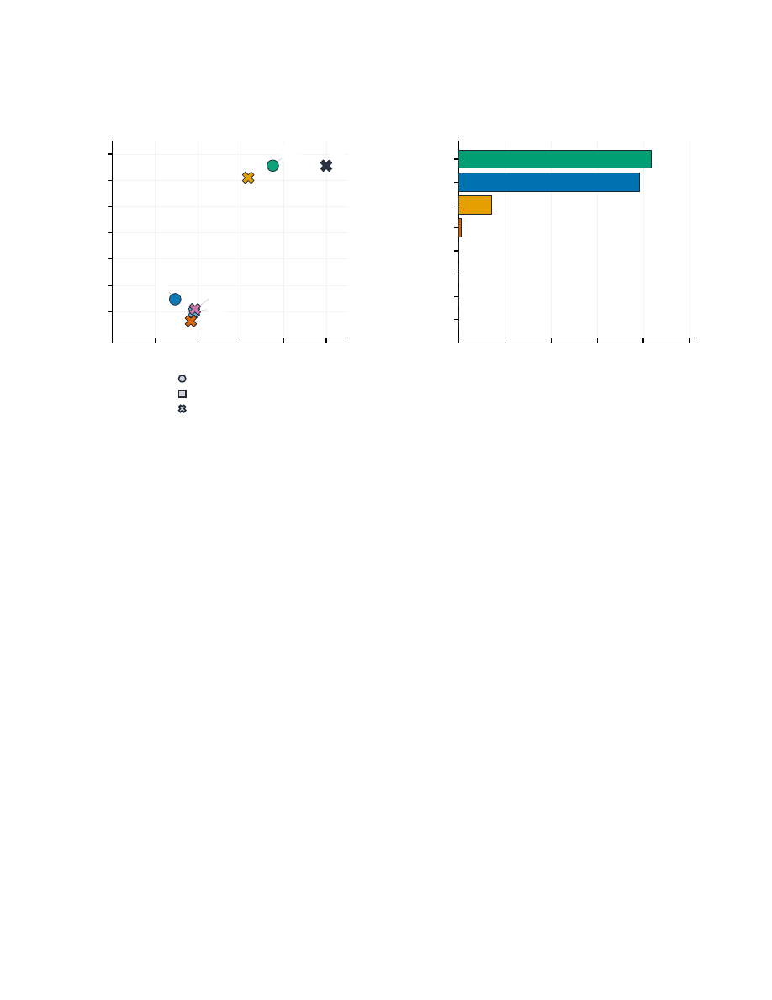
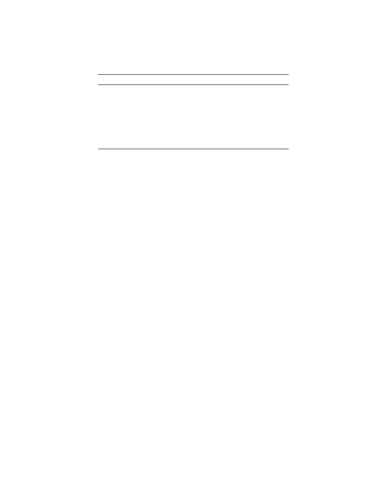
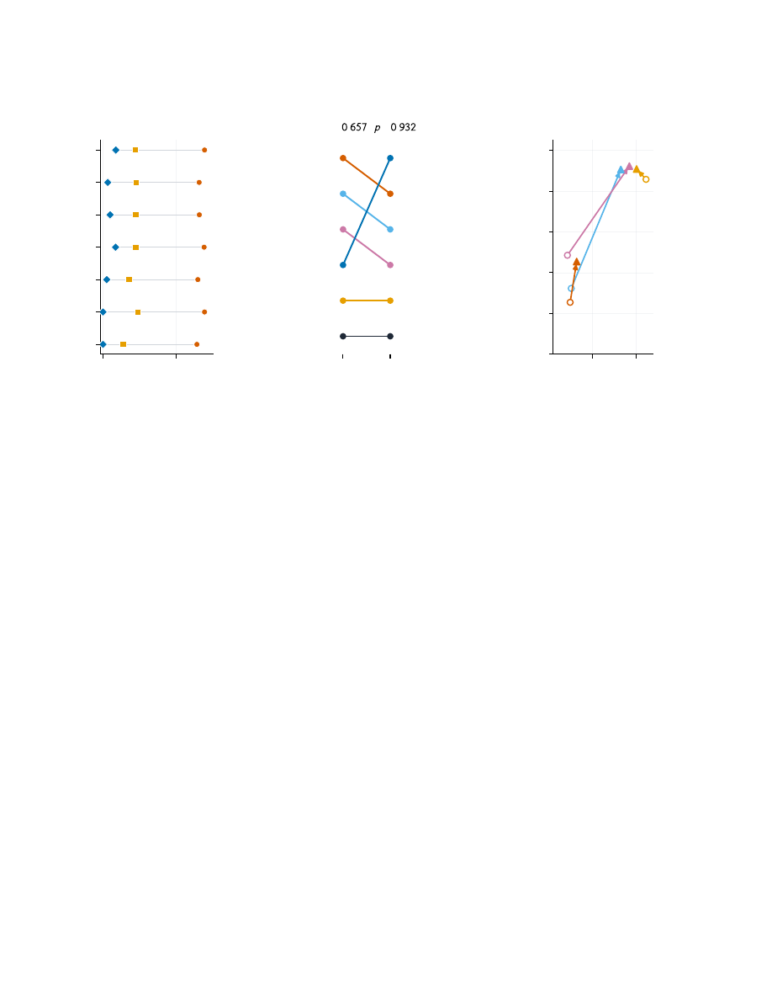
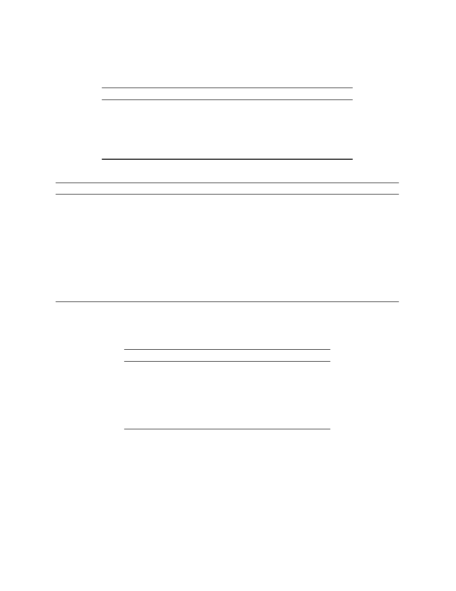
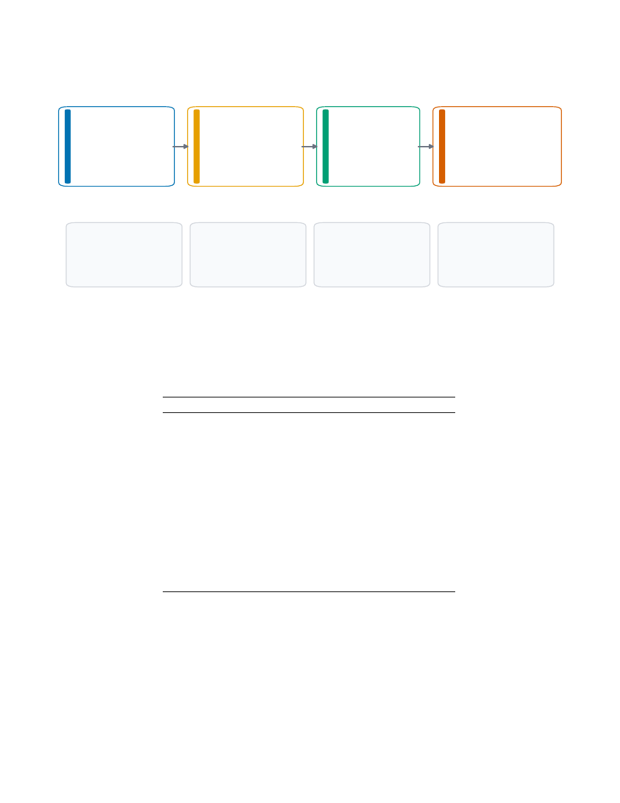
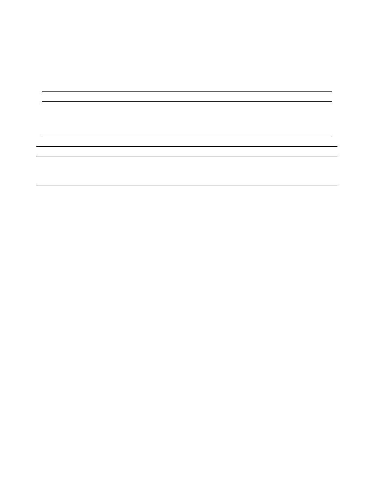
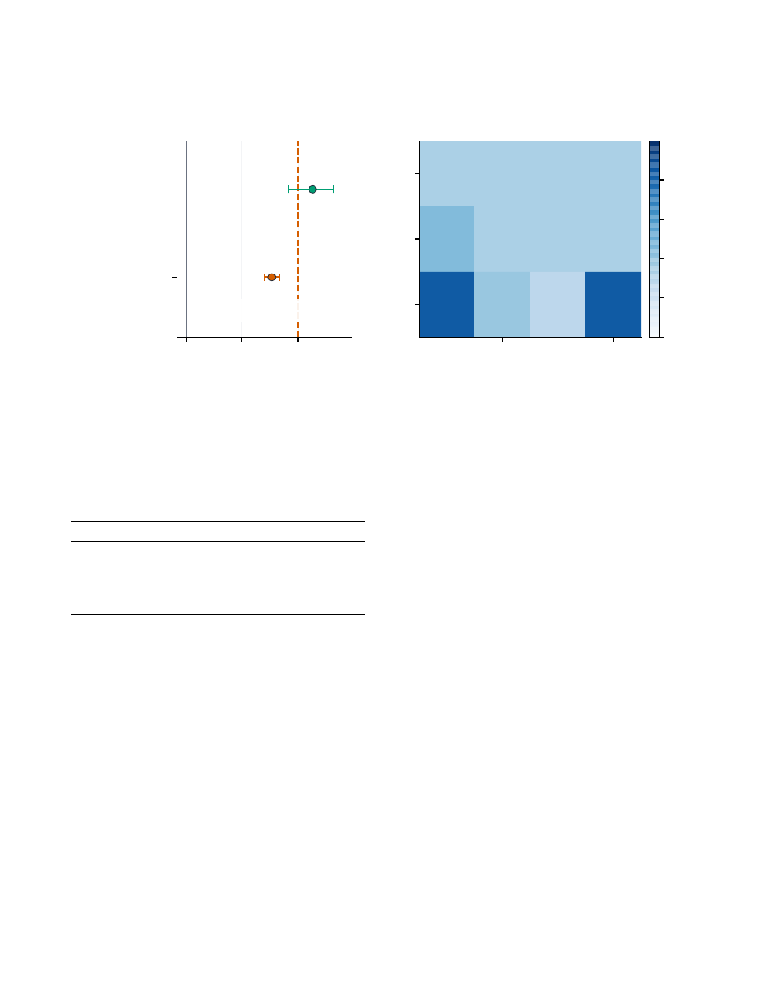

1
2
3
4
5
6
7
8
9
10
11
12
13
14
15
16
17
18
19
20
21
22
23
24
25
26
27
28
29
30
31
32
33
34
35
36
37
38
39
40
41
42
43
44
45
46
47
48
49
50
51
52
53
54
55
56
57
58
59
60
61
62
63
64
65
66
67
68
69
70
71
72
73
74
75
76
77
78
79
80
81
82
83
84
85
86
87
88
89
90
91
92
93
94
95
96
97
98
99
100
101
102
103
104
105
106
107
108
109
110
111
112
113
114
115
116
FinAuth-Audit: Validity-Aware Benchmarking of Financial Agent
Authorization
Ke Wang
Georgia Institute of Technology
Atlanta, Georgia, United States
colinwang@gatech.edu
Xiaorui Tang
Chanjin Technology Development Co., Ltd.
Guangzhou, China
alicetang0618@gmail.com
ABSTRACT
Financial agents increasingly turn weak financial priors into ac-
tions, yet a low false authorization rate (FAR) can hide coverage
collapse, source-authority laundering, or insufficient evidence. We
introduce FinAuth-Audit, a benchmark and release protocol for
testing whether comparisons among execution rules remain valid
under coverage, provenance, consequence severity, review work-
load, utility, and point-in-time constraints. We benchmark execu-
tion rules, not predictors. The artifact combines 124,000 controlled,
provenance, and mechanistic event clusters; 2,500 event-market
clusters; 936 external market dates or sessions; and a prospective
300-date actual-model partition. On a one-time controlled paper
test, the lowest-FAR rule (0.064) retains authority-laundering rate
(ALR) 0.245, while lineage-clean alternatives move along cover-
age, utility, and review frontiers. A clean current role still retains
0.172 indirect laundering, consistent with a finite-sample Bayes-risk
limit under partial lineage observability. A separately preregistered
test evaluates 1,200 cached proposals on 200 dates. It does not re-
produce a 60-date pilot inversion: controlled-to-actual directional
economic-loss ranks have Spearman
𝜌
=
0
.
657 and exact one-sided
𝑝
=
0
.
932, so the inverse hypothesis is not supported. Economic
loss, material harm, and authority violation also produce different
operating-point conclusions, while development-only recalibration
can restore coverage and increase authority violations. A powered
500-date Binance test passes only one of two co-primary arms, so its
intersection-union claim fails and is retained. FinAuth-Audit is not
a model leaderboard, trading-profit benchmark, investment-advice
system, or deployment claim.
CCS CONCEPTS
•
Computing methodologies
→
Machine learning
; •
Applied
computing
→
Economics
.
KEYWORDS
financial agents, execution authorization, benchmark validity,
provenance auditing, abstention, agent safety
ACM Reference Format:
Ke Wang and Xiaorui Tang. 2027. FinAuth-Audit: Validity-Aware
Benchmarking of Financial Agent Authorization. In
Proceedings of
The 33rd ACM SIGKDD Conference on Knowledge Discovery and
Data Mining (KDD ’27).
ACM, New York, NY, USA, 20 pages. https:
//doi.org/10.1145/nnnnnnn.nnnnnnn
1
INTRODUCTION
Financial AI systems increasingly turn forecasts, learned signals,
policy proposals, and language-model assessments into
weak finan-
cial priors
: structured beliefs that may inform an action but do not
by themselves confer execution authority. Examples include a lan-
guage model extracting a directional assessment from an earnings
release, a forecast model proposing a position change, or a risk sys-
tem flagging a credit or liquidity condition. In each case the genera-
tor proposes; a separate execution rule decides whether to execute,
reduce, route to review, or abstain. Existing financial benchmarks
primarily evaluate question answering, forecasting, language under-
standing, or task completion [6, 32–35]. Agent benchmarks extend
evaluation to tool use and multi-step interaction [20, 22, 24, 37],
but successful prediction or task completion does not establish
that a prior deserves execution authority. We therefore benchmark
execution rules and the validity of their evaluation, not predictors.
Figure 1 gives the running example. Cost-Aware authorizes 36.7%
of frozen paper-test rows and has the lowest FAR, 0.064, but ALR
0.245. Hard Role Gate authorizes 75.0% with ALR zero and leads
conservative validation hypervolume, but its FAR is 0.656. Lifecycle
has FAR 0.147, ALR zero, coverage 0.293, and review rate 0.429. No
Action receives FAR
N/A
, not zero. The benchmark therefore ex-
poses a three-way frontier among outcome harm, lineage integrity,
and usable coverage rather than declaring a universal winner.
Low FAR can be statistically reproducible and still be invalid
as an authorization ranking because coverage, provenance, review
load, and generator mechanism change the evaluation object.
Benchmark outcomes can be fragile to task selection and mea-
surement design [8, 17, 19, 25], while high-stakes data work can ac-
cumulate undocumented assumptions and shortcuts [13, 15, 23, 26].
FinAuth-Audit addresses three coupled blind spots. First, low FAR
can be obtained by suppressing difficult cases or ignoring prove-
nance. Second, clean current-role metadata can hide upstream au-
thority laundering. Third, external-transfer and training-utility
claims can be promoted despite insufficient power, collapsed mech-
anism coverage, or a preregistered mixed result.
The benchmark is organized around three contribution axes.
Coverage-aware certification
asks whether raw safety rankings
survive joint FAR, ALR, coverage, utility, and review-load reporting.
Provenance under partial observability
asks what current roles,
full lineage, and missing lineage can identify under delegation,
paraphrase, role noise, and multiple hops.
External and training
validity gates
ask whether point-in-time evidence and learned
authorization comparisons satisfy predeclared power, effect-size,
and mechanism-coverage conditions before positive claims are
permitted.
FinAuth-Audit is a benchmark asset and release protocol, not a
new execution rule. It contains 124,000 controlled, provenance, and
mechanistic event clusters; public event and order-book layers; and
a separately frozen 300-date, five-asset, two-task actual-model parti-
tion. The latter contains 50 development dates, a one-time 200-date
paper test with 1,200 cached proposals, and 50 author-unevaluated
1

117
118
119
120
121
122
123
124
125
126
127
128
129
130
131
132
133
134
135
136
137
138
139
140
141
142
143
144
145
146
147
148
149
150
151
152
153
154
155
156
157
158
159
160
161
162
163
164
165
166
167
168
169
170
171
172
173
174
KDD ’27, August 1–5, 2027, San Jose, CA, USA
Ke Wang and Xiaorui Tang
175
176
177
178
179
180
181
182
183
184
185
186
187
188
189
190
191
192
193
194
195
196
197
198
199
200
201
202
203
204
205
206
207
208
209
210
211
212
213
214
215
216
217
218
219
220
221
222
223
224
225
226
227
228
229
230
231
232
0.0
0.2
0.4
0.6
0.8
1.0
Authorized coverage
0.0
0.1
0.2
0.3
0.4
0.5
0.6
0.7
False authorization rate (F
AR)
a
Raw operating points
DP
CG
UG
RF
CAG
HRG
LC
ALR = 0
0 < ALR <= 0.05
ALR > 0.05
0.00
0.05
0.10
0.15
0.20
0.25
Worst-profile hypervolume
Confidence Gate
Direct Prior
No Action
Uncertainty Gate
Cost-Aware Gate
Risk Filter
Lifecycle Checklist
Hard Role Gate
0.000
0.000
0.000
0.000
0.003
0.036
0.195
0.209
b
Validation conservative hypervolume
Figure 1: Raw FAR, lineage integrity, coverage, and conservative hypervolume produce different rule orderings. Panel (a) reports
one-time paper-test operating points; marker shape encodes ALR strata. Short labels are DP (Direct Prior), CG (Confidence
Gate), UG (Uncertainty Gate), RF (Risk Filter), CAG (Cost-Aware Gate), HRG (Hard Role Gate), and LC (Lifecycle Checklist).
Panel (b) is a pre-frozen validation sensitivity, not a second paper-test ranking. Zero authorization produces FAR and ALR
N/A
,
not zero.
holdout dates whose proposal plaintext remains encrypted. Latent
opportunity, source reliability, costs, stress, and provenance are sam-
pled before rule outputs. Before outcome inspection, existing test
clusters were split deterministically into one-time paper tests and
community-hidden challenges; evaluators, rules, thresholds, data
hashes, and protocols were bound to content-addressed archives.
Our contributions are:
•
a validity-aware benchmark for execution rules across
weak financial priors, with joint coverage, FAR, ALR, utility,
missed-opportunity, and review-workload reporting;
•
branch-neutral utility, sequential-market, and institutional-
workflow generators with cluster splits, mechanism hold-
outs, and a one-time frozen paper/community protocol;
•
a provenance task with a finite-sample observability limit,
direct and indirect laundering, traceable and untraceable
delegation, safe-delegation coverage, and structural
N/A
;
and
•
pre-result power, effect-size, and mechanism-coverage
gates plus a content-addressed artifact that retains a mixed
order-book failure and a larger prospective actual-model
test that does not reproduce the inverse rank-transfer
pattern observed in a 60-date pilot.
EPV serves as one equal-information baseline; removing it does
not change any headline conclusion. FinAuth-Audit does not claim
deployment readiness, trading profitability, investment advice, pub-
lic transfer, or a globally optimal rule.
2
RELATED WORK
Financial and agent benchmarks.
Financial benchmarks evalu-
ate numerical reasoning, language understanding, forecasting, and
decision support [6, 21, 32–34]. General agent benchmarks eval-
uate task completion, browsing, and tool use [20, 22, 24, 36, 37].
These resources establish important capability measurements, but
their evaluation unit is generally a prediction, answer, or completed
trajectory rather than the validity of an execution-authority bench-
mark. Supplementary Table 4 locates FinAuth-Audit along that
distinction.
Selective decisions and safe evaluation.
Selective classifica-
tion studies prediction with abstention [11, 14]; conformal methods
provide distribution-free uncertainty statements under stated as-
sumptions [1, 27, 31]; off-policy evaluation estimates policy value
from logged behavior [10, 18, 29]; and safe reinforcement learning
studies constrained sequential decisions [12, 28]. FinAuth-Audit
does not replace these methods. It audits whether a benchmark
can distinguish genuine authorization quality from zero coverage,
authority leakage, and invalid transfer.
Benchmark and model-risk validity.
Benchmark fragility,
behavioral testing, measurement validity, data documentation, and
shortcut learning motivate stronger evaluation contracts [8, 13,
15, 17, 19, 25, 26]. Financial model-risk guidance likewise empha-
sizes validation, controls, and traceable reporting [2, 4]. The closest
2
233
234
235
236
237
238
239
240
241
242
243
244
245
246
247
248
249
250
251
252
253
254
255
256
257
258
259
260
261
262
263
264
265
266
267
268
269
270
271
272
273
274
275
276
277
278
279
280
281
282
283
284
285
286
287
288
289
290
FinAuth-Audit: Validity-Aware Benchmarking of Financial Agent Authorization
KDD ’27, August 1–5, 2027, San Jose, CA, USA
291
292
293
294
295
296
297
298
299
300
301
302
303
304
305
306
307
308
309
310
311
312
313
314
315
316
317
318
319
320
321
322
323
324
325
326
327
328
329
330
331
332
333
334
335
336
337
338
339
340
341
342
343
344
345
346
347
348
decision-rule perspective evaluates choices across many weak ex-
periments [3, 7, 30]. FinAuth-Audit changes the unit from business
experiments to weak financial priors and adds execution coverage,
source provenance, point-in-time transfer, and mechanism-level
training validity.
3
TASK AND VALIDITY THREATS
3.1
Authorization object
Each row contains a weak financial prior
𝑝
𝑖
attached to an event
cluster
𝑐
(
𝑖
)
and a decision-time information set
I
𝑡
𝑖
. Prior genera-
tors may be heuristics, forecast models, learned policies, language-
model agents, or evidence-only risk systems. The prior specifies a
candidate direction, confidence, expected edge, uncertainty, hori-
zon, source identity, and source role. An execution rule
𝑔
maps only
legal fields in
(
𝑝
𝑖
,
I
𝑡
𝑖
)
to one of four routes:
𝑑
𝑖
=
𝑔
(
𝑝
𝑖
,
I
𝑡
𝑖
) ∈ {
execute
,
reduce
,
review
,
abstain
}
.
Execute and reduce are authorized actions. Review is a deferred
workflow and is not execution coverage. Realized return, post-
cost utility, harm, tail loss, lineage truth, and future decoys are
evaluation fields and are prohibited from deployable rules.
Let
𝐴
𝑖
indicate an authorized action,
𝑈
𝑖
denote selected post-cost
utility,
𝐻
𝑖
=
⊮
[
𝐴
𝑖
=
1
∧
𝑈
𝑖
<
0
]
, and
𝐿
𝑖
indicate that an authorized
action originated from an ineligible source. For an evaluation profile
𝑆
,
Cov
(
𝑆
)
=
Í
𝑖
∈
𝑆
𝐴
𝑖
|
𝑆
|
,
FAR
(
𝑆
)
=
Í
𝑖
∈
𝑆
𝐻
𝑖
Í
𝑖
∈
𝑆
𝐴
𝑖
,
ALR
(
𝑆
)
=
Í
𝑖
∈
𝑆
𝐿
𝑖
Í
𝑖
∈
𝑆
𝐴
𝑖
.
FAR and ALR are
N/A
when
Í
𝐴
𝑖
=
0. We define review load as
Rev
(
𝑆
)
=
1
|
𝑆
|
∑︁
𝑖
∈
𝑆
⊮
[
𝑑
𝑖
=
review
]
.
Cumulative authorized utility (CAU) sums
𝑈
𝑖
over authorized rows;
missed opportunity cost (MOC) sums the best positive eligible
utility on non-authorized rows. Safe-delegation coverage measures
authorization of eligible delegated positive opportunities. These
quantities describe different objectives and are not collapsed into a
scalar leaderboard.
Reader map.
Coverage measures how often a rule executes or
reduces. FAR measures harmful outcomes conditional on autho-
rization; ALR measures ineligible authority lineage on the same
denominator. Review load counts cases deferred to a person. CAU
and MOC track authorized and missed positive utility. Structural
N/A
means that a denominator does not exist, not that risk is zero.
For the multi-task actual-model layer, FAR is retained only as a
legacy alias for
directional economic-loss authorization
, Pr
(
𝑈
<
0
|
𝐴
=
1
)
. We separately report material harm, defined by task-specific
predeclared severity thresholds; directional tail harm; and authority
violation, defined as authorization of an evidence-only risk critic. A
losing action is therefore not automatically a material or authority
failure, and a profitable action cannot legalize an ineligible source.
Structural
N/A
also applies when no development candidate satisfies
a preregistered operating-point constraint.
Observable-provenance limit.
Let
𝐿
∈ {
0
,
1
}
denote laundering
truth and let
𝑋
be any legal observable signature available to a
provenance rule. A standard Bayes-classification identity [9] gives
inf
ℎ
Pr
[
ℎ
(
𝑋
)
≠
𝐿
]
=
∑︁
𝑥
min
{
Pr
(
𝑋
=
𝑥 , 𝐿
=
0
)
,
Pr
(
𝑋
=
𝑥 , 𝐿
=
1
)}
.
(1)
Under equal class priors this is
(
1
−
TV
(
𝑃
𝑋
|
𝐿
=
0
, 𝑃
𝑋
|
𝐿
=
1
))/
2. Thus
identical legal signatures with conflicting lineage truth impose
unavoidable error on every rule measurable with respect to
𝑋
; ran-
domization cannot improve the Bayes risk. FinAuth-Audit reports
the plug-in finite-sample value and its exact overlap identity, not a
claim that deployed lineage distributions are known. The proof is
in the supplement.
3.2
Four validity threats
Coverage collapse
occurs when a rule suppresses difficult profiles,
leaving an apparently low FAR over a narrow authorized subset.
Provenance laundering
occurs when the current source appears
eligible although authority originated from an ineligible source
and propagated through delegation, paraphrase, or multiple hops.
Full lineage, partial signatures, and current-role-only observations
define different identifiability regimes.
Invalid transfer or train-
ing evidence
occurs when public replay violates point-in-time
availability, treats derived rows as independent, lacks event-cluster
power, or compares learners after mechanism-specific coverage col-
lapses. FinAuth-Audit treats these as benchmark-validity failures,
not merely model errors.
4
BENCHMARK CONSTRUCTION
4.1
Pipeline and data layers
Supplementary Figure 4 summarizes the artifact. Each of 50,000
utility-IID clusters contains four source-role variants, producing
200,000 rows split by cluster into 120,000 training, 40,000 validation,
and 40,000 test rows. Before outcome inspection, the 10,000 test
clusters were ordered by a SHA-256 rule and split exactly into 5,000
paper-test and 5,000 community-hidden clusters. The seven frozen
opportunity slices include ordinary, moderate stress, severe stress,
rare safe opportunity, high missed opportunity, stress-only period,
and a no-opportunity control.
Branch-neutral construction.
The generator follows a fixed se-
quence:
(1) sample an event state, opportunity intent, stress severity,
liquidity, and cost regime;
(2) sample four source-role-specific noisy priors and confi-
dence/uncertainty fields;
(3) realize return, full/reduced post-cost utility, and outcome-
only harm labels;
(4) attach provenance transformations or task-specific work-
flow state; and
(5) run execution rules only after the row and legal-field mani-
fest are frozen.
An oracle-positive opportunity indicates that at least one role- and
provenance-eligible full or reduced action has positive post-cost
utility. It is never a deployable feature. Generator parameters, ex-
pected opportunity rates, mechanism holdouts, and seeds are frozen
before evaluation; validation defects remain in the negative-results
log and were repaired only by rule-independent corrections.
3
349
350
351
352
353
354
355
356
357
358
359
360
361
362
363
364
365
366
367
368
369
370
371
372
373
374
375
376
377
378
379
380
381
382
383
384
385
386
387
388
389
390
391
392
393
394
395
396
397
398
399
400
401
402
403
404
405
406
KDD ’27, August 1–5, 2027, San Jose, CA, USA
Ke Wang and Xiaorui Tang
407
408
409
410
411
412
413
414
415
416
417
418
419
420
421
422
423
424
425
426
427
428
429
430
431
432
433
434
435
436
437
438
439
440
441
442
443
444
445
446
447
448
449
450
451
452
453
454
455
456
457
458
459
460
461
462
463
464
To test generator dependence, we prospectively add two mecha-
nisms without changing rule thresholds: a sequential-market gener-
ator with regimes, inventory, market impact, and path dependence,
and an institutional-workflow generator with trading, credit, and
research-to-action tasks, risk budgets, compliance flags, approval
depth, and review pressure. Together they add 96,000 rows from
24,000 clusters. They are mechanistically distinct but still author-
controlled scenarios, not market simulators or institutional logs.
4.2
Provenance layer
The provenance layer reuses the controlled market-state scaffold
but adds role claims, verified roles, original source identifiers, dele-
gation parents, transformation chains, content hashes, hop depth,
traceability, and lineage attestation. Five attack families are bal-
anced at the cluster level: clean, role noise, delegation, paraphrase,
and multi-hop. Role noise rates are 0%, 5%, 10%, 20%, and 40%; hop
depths range from one to five. Traceable rows expose enough lin-
eage for detection in principle. Untraceable rows intentionally omit
that evidence and are reported as a separate stress/impossibility
stratum.
4.3
Point-in-time public, order-book, and
training layers
The public layer contains 2,500 structurally valid Polymarket event
clusters, split chronologically into 1,500 training, 500 validation,
and 500 sealed test clusters. The source probability is the last obser-
vation strictly before a fixed decision timestamp at 35% of scheduled
lifecycle. Outcome and post-decision fields are labels only. Twenty-
three high-activity months reached the frozen pagination cap and
are disclosed as truncated. The pre-result power gate estimates 0.164
power, with LCB95 0.160, against a 0.80 requirement, so the layer re-
mains
exploratory_only
. FRED and GDELT remain documented
extensions rather than confirmatory sources.
A v0.3 extension adds observed market-outcome replay with con-
structed priors and roles: 185,592 Binance rows from 703 UTC dates
and 16,776 licensed MES rows from 233 RTH sessions. Binance com-
bines official banded depth with one-minute BTCUSDT/ETHUSDT
bars, split 120/500/83 into development, confirmatory paper test,
and hidden dates; planning power uses the frozen v0.2 variance
model. MES uses one-contract BBO replay split 60/140/33, with the
paper test descriptive only. Both sources reuse frozen priors, rules,
and thresholds; outcomes remain sealed until one-time evaluation,
and MES rows are not redistributed.
A v0.6 actual-proposal extension uses 300 non-overlapping dates
from May 2025 through March 2026, deterministically assigned
across BTC, ETH, BNB, SOL, and XRP. Each date contains a
directional-execution task with an eligible edge proposer and a
25% risk-limit-increase task whose source role is deterministi-
cally assigned as eligible proposer or evidence-only critic before
generation. Three model configurations receive the same legal
pre-decision context. The chronological split contains 50 develop-
ment, 200 one-time paper-test, and 50 author-unevaluated holdout
dates. Holdout proposals were generated and encrypted before
outcome evaluation; their key remains outside the repository
and the ciphertext was not decrypted. Outputs retain malformed
placeholders without repair or favorable reruns. Rationales are
audit metadata and are excluded from every rule.
The registered training layer freezes D0–D7 at 400 clusters per
seed and five seeds. A primary endpoint is valid only when every
held-out mechanism has a 95% coverage lower bound of at least
0.05. A prospective v0.3 robustness study preserves that primary
and adds Logistic Regression, histogram gradient boosting, MLP,
and selective Logistic learners; 400, 1,000, 5,000, and 20,000-cluster
budgets; three curricula; and six held-out mechanisms. The validity
condition is deliberately allowed to make a comparison undefined.
5
EVALUATION PROTOCOL
5.1
Rules and legal information
The controlled audit compares No Action, Direct Prior, confidence
and uncertainty gates, a risk filter, a cost-aware gate, a hard current-
role gate, and a lifecycle checklist. The provenance audit adds No
Role Gate, Shared Threshold, Soft Penalty, Provenance Hard Gate,
Provenance Learned Gate, and an equal-information EPV Adapter.
Equal-information means that the adapter receives the same legal
decision-time fields as comparable rules, without outcomes or priv-
ileged source evidence. It represents one learned utility-aware rule
family and tests whether low FAR transfers to provenance integrity;
it receives no privileged status. These baselines represent distinct
authorization designs, and none defines the benchmark identity.
Each implementation declares its legal fields, and the feature-access
audit fails if a deployable rule uses realized return, utility, harm,
laundering truth, tail loss, future decoys, or public outcomes.
5.2
Cluster-aware bounds and certification
All uncertainty resamples event clusters, not derived prior rows [5].
Main controlled and provenance results use 5,000 bootstrap repli-
cates. For each rule and profile, FinAuth-Audit estimates a one-sided
95% coverage lower bound and FAR/ALR upper bounds. The frozen
certification grid uses
𝜏
ℎ
∈ {
.
05
, .
10
, .
15
, .
20
, .
25
, .
30
}
,
𝜏
𝑎
∈ {
0
, .
01
, .
02
, .
05
}
,
𝑐
min
∈ {
.
05
, .
10
, .
20
, .
30
, .
50
}
.
A cell passes only if
UCB
.
95
(
FAR
) ≤
𝜏
ℎ
,
UCB
.
95
(
ALR
) ≤
𝜏
𝑎
,
LCB
.
95
(
Cov
) ≥
𝑐
min
.
Certification volume is the passed fraction of the 120 deterministic
cells, not a multiple-testing result or weighted leaderboard score. We
report the minimum of overall and stress-profile volumes. Coverage
collapse is 1
−
Cov
𝑠𝑡 𝑟 𝑒𝑠𝑠
/
Cov
𝑜𝑟 𝑑𝑖𝑛𝑎𝑟 𝑦
and remains undefined when
ordinary coverage is zero.
Because the discrete grid encodes risk preferences, we also report
five frozen profile grids, a continuous conservative hypervolume,
and the FAR/ALR/coverage/MOC Pareto set on validation. These
diagnostics do not select a universal winner. Review is reported
separately because routing a case to a person consumes capacity:
the artifact evaluates fixed 5%, 10%, 20%, and 40% review-capacity
scenarios and normalized 0.5–5 basis-point review-cost sensitivi-
ties.
4
465
466
467
468
469
470
471
472
473
474
475
476
477
478
479
480
481
482
483
484
485
486
487
488
489
490
491
492
493
494
495
496
497
498
499
500
501
502
503
504
505
506
507
508
509
510
511
512
513
514
515
516
517
518
519
520
521
522
FinAuth-Audit: Validity-Aware Benchmarking of Financial Agent Authorization
KDD ’27, August 1–5, 2027, San Jose, CA, USA
523
524
525
526
527
528
529
530
531
532
533
534
535
536
537
538
539
540
541
542
543
544
545
546
547
548
549
550
551
552
553
554
555
556
557
558
559
560
561
562
563
564
565
566
567
568
569
570
571
572
573
574
575
576
577
578
579
580
Table 1: FinAuth-Audit releases multiple validity layers rather than a single aggregate row count. Counts and boundaries
are generated from manifests. Controlled, provenance, external order-book, and actual-model results use separately frozen
one-time paper tests; the event-market and mechanistic/training extensions retain their stated validation-only or sealed status.
Layer
Rows
Clusters Split or budget
Coverage / boundary
Controlled core
200,000
50,000 30k / 10k / 5k / 5k clusters
train / val. / paper / hidden
Provenance laundering
200,000
50,000 30k / 10k / 5k / 5k clusters
5 attacks; 2 trace strata
Mechanistic generators
96,000
24,000 sequential / institutional
validation robustness; test sealed
Public point-in-time
2,500
2,500 1.5k / 0.5k / 0.5k
500 validation reported; test sealed
External order book
202,368
936 Binance 120/500/83; MES 60/140/33 powered public + licensed descriptive
Actual model proposals
1,200
200 50 / 200 / 50 dates
3 models; 2 tasks/date; aggregate only
Training utility
144 fits
400–20k /
curriculum
3 curricula; 4 learners
6 mechanisms; N/A retained
5.3
Pre-result gates
Public evaluation is permitted to become confirmatory only if point-
in-time checks, independent-cluster counts, rule coverage, and the
frozen power threshold all pass. The gate uses validation uncer-
tainty and structural test-cluster counts without evaluating public
test outcomes. Training utility uses a mechanism-wise FAR end-
point at a validation-fixed target coverage. The endpoint is defined
only when every held-out mechanism passes its coverage-LCB floor.
D2–D7 are compared with D1 using Holm correction [16]; D0 and
the role-neutral control are outside that family. Undefined seed
pairs remain absent rather than being imputed as wins or losses.
The v0.6 zero-shot transfer test compares six shared directional
rules using economic-loss authorization. Support for the prereg-
istered inverse hypothesis requires both date-bootstrap Pr
(
𝜌
<
0
) ≥
.
95 and an exact one-sided inverse-or-more-extreme permu-
tation
𝑝
≤
.
05. Registered diagnostics include Kendall
𝜏
𝑏
, leave-
one-rule-out, pairwise reversals, and model, asset, and volatility
strata; subgroup estimates are not powered confirmatory tests. A
secondary in-domain track selects unchanged rule forms from fixed
grids using five chronological folds over 50 development dates and
a 0.10 execute-or-reduce coverage floor. Selections are frozen before
paper outcomes; invalid selections remain
N/A
.
5.4
One-time paper test and hidden challenge
After all rules, thresholds, metrics, generators, robustness profiles,
and reporting templates were fixed, a deterministic SHA-256 or-
dering split the 10,000 controlled/provenance test clusters into
5,000 paper-test and 5,000 community-hidden clusters using iden-
tifiers only. A validation rehearsal reproduced registered point
metrics to within 1
.
1
×
10
−
15
. The evaluator and scientific surface
were then stored in a content-addressed archive with SHA-256
be95f4d1...98aa8
; a one-time registry records command, envi-
ronment, inputs, outputs, and inspection time. The community-
hidden, public-test, and FinAuth-Worlds hidden outcomes remain
unevaluated. Strict verification checks 475 conditions, including
surface hashes and the no-community-access flag.
6
BENCHMARK FINDINGS
Evidence tiers.
Controlled and provenance headline results use the
one-time 5,000-cluster paper test. Separately frozen tests use 500
powered Binance UTC-date clusters, 140 descriptive MES sessions,
and 200 dates with 1,200 actual-model proposals across two tasks.
Event-market transfer, cross-generator, and training-robustness
analyses remain prospective validation evidence; every community-
hidden partition is unevaluated.
6.1
Finding 1: Raw FAR can misrank
authorization rules
Table 2 reports the controlled paper test. Direct Prior authorizes
every row and has FAR 0.656 and ALR 0.250. Cost-Aware Gate
has the lowest raw FAR, 0.064, and CAU 40.77, but ALR 0.245 and
certification volume zero. Lifecycle Checklist has higher FAR, 0.147,
and lower CAU, 30.14, but ALR zero and the only nonzero minimum
profile certification volume, 0.30. It obtains that operating point
with coverage 0.293 and review rate 0.429. No Action has coverage
zero and FAR/ALR
N/A
; it cannot win by abstaining everywhere.
The ranking is not an artifact of this partition: validation-to-
paper-test Spearman correlation is 1.000 for raw FAR rank and
effectively 1.000 for certified rank. Yet the pre-frozen use-case fam-
ilies and continuous sensitivity do not select the same operating
point: no rule passes the conservative family, Lifecycle has nonzero
balanced and coverage-first volume, and Hard Role Gate has larger
conservative hypervolume than Lifecycle. Seven nonzero-action
rules lie on the exact four-dimensional Pareto set, so the supple-
ment reports the frontier rather than using Pareto membership
as a discriminator.
Finding 1: FinAuth-Audit exposes a multi-
objective authorization frontier; low raw FAR is neither nec-
essary nor sufficient for a valid rule comparison.
6.2
Finding 2: Current roles do not establish
provenance
Figure 2 and Table 3 report the provenance paper test. Hard Role
Gate has direct leakage zero but indirect leakage and ALR 0.172.
Its current source is eligible, but the authority chain need not be
clean. Provenance Hard Gate sets ALR to zero at coverage 0.591,
FAR 0.674, safe-delegation coverage 0.698, and review rate 0.183.
The learned gate raises coverage to 0.603 while accepting ALR 0.018.
Utility-screening rules can have low FAR while retaining indirect
laundering: Lifecycle has FAR 0.146 and ALR 0.165; EPV has FAR
0.039 and ALR 0.169.
Equation (1) gives the same boundary from another angle. The
plug-in current-role-only Bayes risk is 0.129 on traceable rows and
5

581
582
583
584
585
586
587
588
589
590
591
592
593
594
595
596
597
598
599
600
601
602
603
604
605
606
607
608
609
610
611
612
613
614
615
616
617
618
619
620
621
622
623
624
625
626
627
628
629
630
631
632
633
634
635
636
637
638
KDD ’27, August 1–5, 2027, San Jose, CA, USA
Ke Wang and Xiaorui Tang
639
640
641
642
643
644
645
646
647
648
649
650
651
652
653
654
655
656
657
658
659
660
661
662
663
664
665
666
667
668
669
670
671
672
673
674
675
676
677
678
679
680
681
682
683
684
685
686
687
688
689
690
691
692
693
694
695
696
Table 2: Paper-test operating points and validation conservative hypervolume reject a single-winner interpretation. CAU is
cumulative authorized utility; MOC is missed opportunity cost; Val. HV is a pre-frozen validation sensitivity. Full certification
grids and the Pareto set appear in the supplement.
N/A
denotes structural zero authorization.
Rule
Cov.
FAR
ALR Review CAU MOC Val. HV
No Action
0.000
N/A
N/A
0.000
0.00 31.20
0.000
Direct Prior
1.000 0.656 0.250
0.000 20.38
0.00
0.000
Confidence Gate
0.382 0.099 0.250
0.000 39.46
0.00
0.000
Uncertainty Gate
0.386 0.109 0.248
0.000 39.31
0.01
0.000
Risk Filter
0.635 0.610 0.209
0.000 23.31
5.97
0.036
Cost-Aware Gate
0.367 0.064 0.245
0.000 40.77
0.01
0.003
Hard Role Gate
0.750 0.656 0.000
0.000 16.01
0.00
0.209
Lifecycle Checklist 0.293 0.147 0.000
0.429 30.14
0.63
0.195
0.0
0.1
0.2
Leakage rate among authorized rows
EPV Adapter
Hard Role Gate
Lifecycle Checklist
No Role Gate
Provenance Hard Gate
Provenance Learned Gate
Shared Threshold
a
Role checks miss indirect laundering
Direct leakage
Indirect leakage
0.0
0.1
0.2
0.3
0.4
False-block rate on safe delegation
0.00
0.05
0.10
0.15
0.20
0.25
Authority laundering rate (ALR)
b
Delegation-integrity trade-off
EPV
HRG
LC
NRG
PHG PLG
ST
Safe delegation 25%
Safe delegation 75%
Figure 2: Current-role integrity, provenance integrity, and usable delegation differ on the paper test. Panel (a) separates direct
from indirect leakage using color and hatch. Panel (b) plots ALR against false blocking; bubble area encodes safe-delegation
coverage. Labels abbreviate the rules listed in Table 3.
0.256 on untraceable rows; legal partial signatures reduce it to 0.061
and 0.083. The implementation independently verifies the overlap
identity to numerical precision. These values quantify ambiguity
on the registered validation distribution; they do not license recon-
struction of hidden institutional lineage.
Finding 2: role eligibil-
ity and provenance integrity are distinct evaluation targets,
and missing lineage creates an identifiable information cost
rather than a zero-risk state.
6.3
Finding 3: A larger prospective test does not
reproduce the pilot inversion
The v0.6 paper test evaluates 1,200 cached proposals from three
model configurations on two tasks across 200 independent UTC
dates and five assets. The preregistered zero-shot inverse-rank hy-
pothesis is not supported: controlled-to-actual directional economic-
loss ranks have Spearman
𝜌
=
0
.
657 and Kendall
𝜏
𝑏
=
0
.
600, the
exact one-sided permutation test gives
𝑝
=
0
.
932, and only 0.173 of
10,000 date-cluster bootstrap replicates have
𝜌
<
0. A 60-date pilot
had reported
𝜌
=
−
0
.
928; the larger prospective result is binding
and the pilot is not retained as a headline finding. Only 3 of 15 rule
pairs reverse, all involving Lifecycle, and omitting Lifecycle gives
𝜌
=
1
.
000 among the remaining five rules. Nine malformed expected
records remain deterministic non-action placeholders in task de-
nominators; none is repaired or rerun. The wide cluster-bootstrap
interval measures rank instability across date resamples, while the
exact test targets the preregistered inverse alternative. Model, asset,
6

697
698
699
700
701
702
703
704
705
706
707
708
709
710
711
712
713
714
715
716
717
718
719
720
721
722
723
724
725
726
727
728
729
730
731
732
733
734
735
736
737
738
739
740
741
742
743
744
745
746
747
748
749
750
751
752
753
754
FinAuth-Audit: Validity-Aware Benchmarking of Financial Agent Authorization
KDD ’27, August 1–5, 2027, San Jose, CA, USA
755
756
757
758
759
760
761
762
763
764
765
766
767
768
769
770
771
772
773
774
775
776
777
778
779
780
781
782
783
784
785
786
787
788
789
790
791
792
793
794
795
796
797
798
799
800
801
802
803
804
805
806
807
808
809
810
811
812
Table 3: Paper-test provenance controls trade authorization quality, lineage integrity, delegation coverage, and review load.
Direct and indirect columns are leakage rates among authorized rows.
Rule
Cov.
FAR
ALR Direct Indirect Safe del. Review
No Action
0.000
N/A
N/A
N/A
N/A
0.000
0.000
No Role Gate
1.000 0.674 0.250
0.099
0.151
1.000
0.000
Shared Threshold
0.371 0.122 0.250
0.099
0.151
0.999
0.000
Soft Penalty
0.406 0.198 0.238
0.085
0.153
0.999
0.000
Hard Role Gate
0.879 0.674 0.172
0.000
0.172
1.000
0.121
Provenance Hard Gate
0.591 0.674 0.000
0.000
0.000
0.698
0.183
Provenance Learned Gate 0.603 0.668 0.018
0.000
0.018
0.674
0.100
Lifecycle Checklist
0.335 0.146 0.165
0.000
0.165
0.999
0.296
EPV Adapter
0.297 0.039 0.169
0.000
0.169
0.999
0.000
and volatility estimates remain underpowered diagnostics rather
than substitute hypotheses.
Endpoint choice changes interpretation. Zero-shot economic-
loss authorization lies between 0.641 and 0.694 among authorizing
rules, while material harm ranges from 0.138 to 0.238 and author-
ity violation from zero to 0.088. Lifecycle has the lowest mate-
rial and tail-harm rates and zero authority violation, but coverage
0.121, review rate 0.069, and substantial missed benign opportunity.
Development-only recalibration raises Confidence coverage from
0.103 to 0.331 and Uncertainty coverage from 0.086 to 0.370, while
their authority-violation rates rise from 0.032 to 0.091 and from
0.049 to 0.092. Lifecycle remains structural
N/A
: its best develop-
ment candidate reaches coverage 0.08, below the frozen 0.10 floor.
Thus threshold adjustment does not supply a universal transport
repair.
The separately preregistered mechanistic generators provide
validation-only robustness evidence. With unchanged thresholds,
sequential-market and institutional-workflow raw FAR ranks have
Spearman 0.994, whereas their correlations with utility IID are 0.683
and 0.738. The lowest-FAR rule differs from the highest-certification
rule in two of three generator families, and the sequential generator
certifies no rule under the frozen surface.
Finding 3: a validity-
aware benchmark must be able to retire an attractive pilot
claim, distinguish endpoint semantics, and report localized
transfer sensitivity without replacing a failed primary with
favorable subgroups.
6.4
Finding 4: Validity gates preserve mixed and
undefined results
The preregistered 500-date Binance IUT
fails
despite adequate
power (0.970/0.965). Cost-Aware minus Lifecycle lowers false-
authorization burden by
−
0
.
0170 (95% CI
[−
0
.
0198
,
−
0
.
0138
]
),
passing the registered
−
0
.
015 arm, while laundering rises only
+
0
.
0154 (95% CI
[+
0
.
0140
,
+
0
.
0168
]
), below the pre-result
+
0
.
020
SESOI. Seven-day blocks agree, and a favorable 4-bps sensitivity
remains secondary. MES is descriptive only: a fixed six-prior bundle
makes the rule pair differ on one ineligible critic, so its 1
/
6 contrast
is not an estimand (Supplementary Table 11).
The earlier event-market layer still passes timestamp, field-
access, split-isolation, and provenance checks, but its estimated
cluster-level power is 0.164 with LCB95 0.160, below the frozen
0.80 requirement. It remains
exploratory_only
, and its public
test stays sealed.
The registered 400-cluster Logistic study has no valid D2–D7
versus D1 comparison because at least one held-out mechanism
violates the 5% coverage-LCB floor. The prospective v0.3 study in-
creases learner capacity and budget without altering that primary.
At 20,000 clusters, full-audit Logistic and selective Logistic recover
five of six mechanisms on average (0.833 valid-mechanism frac-
tion), but sequential-market coverage still collapses. The complete
cross-mechanism FAR remains
N/A
for every learner/curriculum
combination.
Finding 4: a validity-aware benchmark is useful
when it retains a powered mixed failure, an underpowered
transfer layer, and a coverage-collapsed learner comparison
instead of converting any of them into a positive claim.
Supplementary Figure 5 visualizes the powered mixed external
result and the incomplete mechanism-coverage surface without
changing their registered statuses.
7
USE, LIMITATIONS, AND RESEARCH
OPPORTUNITIES
Community use.
External researchers can implement a rule
against the legal feature manifest and run the same cluster-aware
certification, provenance, power, and mechanism-coverage checks.
The release records field access, four-way routes, hashes, and
structural
N/A
. The 5,000-cluster community-hidden partition
remains unevaluated under versioned maintenance.
From controlled evaluation to deployment.
The controlled
layers are authorization scenarios, not price-path simulations, insti-
tutional logs, or human labels. Branch-neutral construction and the
frozen test improve internal validity, while prospective generators
expose mechanism sensitivity. Because all generators share author-
ship and legal-field design, conclusions remain conditional on the
released scenarios and do not establish practitioner agreement or
deployment readiness.
External and review limits.
Binance adds observed spread
and depth. Planning variance is transported, constructed priors
remain in v0.3, and only one arm passes. The v0.6 layer adds ac-
tual model proposals across five assets and two tasks, but legal
source roles remain benchmark-assigned and the study does not
observe institutional permission. Its 200 dates support aggregate
inference but not precise model- or asset-specific rankings. The
7

813
814
815
816
817
818
819
820
821
822
823
824
825
826
827
828
829
830
831
832
833
834
835
836
837
838
839
840
841
842
843
844
845
846
847
848
849
850
851
852
853
854
855
856
857
858
859
860
861
862
863
864
865
866
867
868
869
870
KDD ’27, August 1–5, 2027, San Jose, CA, USA
Ke Wang and Xiaorui Tang
871
872
873
874
875
876
877
878
879
880
881
882
883
884
885
886
887
888
889
890
891
892
893
894
895
896
897
898
899
900
901
902
903
904
905
906
907
908
909
910
911
912
913
914
915
916
917
918
919
920
921
922
923
924
925
926
927
928
0.0
0.5
Authorization-conditional rate
DP
CG
UG
RF
CAG
HRG
LC
E-loss
M-harm
A-viol.
(a)
Controlled Actual
DP
DP
CG
CG
UG
UG
RF
RF
CAG
CAG
LC
LC
(b) Rank transfer
= + .
,
= .
0.2
0.4
Coverage
0.00
0.02
0.04
0.06
0.08
0.10
Authority
-violation rate
CG
UG
RF
CAG
LC: structural N/A
(c) Development-only recalibration
Figure 3: The actual-model paper test separates consequence semantics, rank transfer, and threshold transport. Panel (a) reports
zero-shot authorization-conditional rates: economic loss is directional post-cost loss, material harm uses preregistered task-
specific severity, and authority violation is authorization of an evidence-only critic. Panel (b) reports the preregistered aggregate
rank test; the inverse hypothesis is not supported. Panel (c) uses open circles for zero-shot and triangles for development-only
recalibration. Lifecycle is structural
N/A
because none of 36 candidates met the 0.10 development coverage floor. This is
rule-transfer evidence, not a model or trading leaderboard.
holdout snapshot is self-custodied ciphertext rather than third-
party escrow, and model aliases can drift after generation. MES
is licensed, single-instrument, underpowered, and has one non-
estimand role contrast. Event-market, FRED, and GDELT evidence
remains non-confirmatory; no source provides practitioner labels
or broad generalization. Review load and cost are simulated, not
observed staffing performance.
What the validity gates show.
Across 144 prospective fits,
broader data recover five of six mechanisms, while sequential-
market coverage remains unresolved. The actual-proposal audit
shows why the release protocol matters: a dramatic 60-date pi-
lot inversion did not survive the larger preregistered test, and
development-only threshold recalibration did not uniformly im-
prove authority quality. Coverage-constrained objectives, inde-
pendently authored generators, practitioner-labelled authorization
tasks, and stronger point-in-time data can be added without chang-
ing the frozen paper test. FinAuth-Audit remains an offline research
benchmark, not investment advice or institutional approval.
8
CONCLUSION
FinAuth-Audit makes benchmark validity part of financial-agent au-
thorization evaluation. Its frozen controlled test shows that low raw
FAR can coexist with authority laundering, while provenance in-
tegrity, delegation coverage, utility, missed opportunity, and review
load form a genuine frontier. A larger prospective actual-proposal
test does not reproduce the inverse rank transfer observed in a
60-date pilot; it instead separates economic loss, material harm, au-
thority violation, and development-only recalibration. The powered
order-book test retains a mixed intersection-union failure, while
public-power and training-coverage gates keep weaker evidence
exploratory or
N/A
. The public artifact preserves each evaluation
surface and its adverse results. FinAuth-Audit therefore supports
reproducible comparison of execution rules across weak financial
priors without treating prediction quality, any model source, any
baseline, or any single metric as execution authority.
8

929
930
931
932
933
934
935
936
937
938
939
940
941
942
943
944
945
946
947
948
949
950
951
952
953
954
955
956
957
958
959
960
961
962
963
964
965
966
967
968
969
970
971
972
973
974
975
976
977
978
979
980
981
982
983
984
985
986
FinAuth-Audit: Validity-Aware Benchmarking of Financial Agent Authorization
KDD ’27, August 1–5, 2027, San Jose, CA, USA
987
988
989
990
991
992
993
994
995
996
997
998
999
1000
1001
1002
1003
1004
1005
1006
1007
1008
1009
1010
1011
1012
1013
1014
1015
1016
1017
1018
1019
1020
1021
1022
1023
1024
1025
1026
1027
1028
1029
1030
1031
1032
1033
1034
1035
1036
1037
1038
1039
1040
1041
1042
1043
1044
REFERENCES
[1] Anastasios N. Angelopoulos and Stephen Bates. 2021. A Gentle Introduc-
tion to Conformal Prediction and Distribution-Free Uncertainty Quantification.
arXiv:2107.07511
[2] Basel Committee on Banking Supervision. 2013. Principles for Effective Risk
Data Aggregation and Risk Reporting.
[3] Aurelien Bibaut, Winston Chou, Simon Ejdemyr, and Nathan Kallus. 2024. Learn-
ing the Covariance of Treatment Effects Across Many Weak Experiments. In
Proceedings of the 30th ACM SIGKDD Conference on Knowledge Discovery and Data
Mining
. Association for Computing Machinery, New York, NY, USA, 153–162.
https://doi.org/10.1145/3637528.3672034
[4] Board of Governors of the Federal Reserve System and Office of the Comptroller
of the Currency. 2011. Supervisory Guidance on Model Risk Management. SR
11-7 / OCC 2011-12.
[5] A. Colin Cameron, Jonah B. Gelbach, and Douglas L. Miller. 2008. Bootstrap-
Based Improvements for Inference with Clustered Errors.
Review of Economics
and Statistics
90, 3 (2008), 414–427. https://doi.org/10.1162/rest.90.3.414
[6] Zhiyu Chen, Wenhu Chen, Charese Smiley, Sameena Shah, Iana Borova, Dylan
Langdon, Reema Moussa, Matt Beane, Ting-Hao Huang, Bryan Routledge, and
William Yang Wang. 2021. FinQA: A Dataset of Numerical Reasoning over
Financial Data. In
Proceedings of the 2021 Conference on Empirical Methods in
Natural Language Processing
. Association for Computational Linguistics, Online
and Punta Cana, Dominican Republic, 3697–3711. https://doi.org/10.18653/v1/
2021.emnlp-main.300
[7] Winston Chou, Colin Gray, Nathan Kallus, Aurelien Bibaut, and Simon Ejde-
myr. 2025. Evaluating Decision Rules Across Many Weak Experiments.
arXiv:2502.08763
[8] Mostafa Dehghani, Yi Tay, Alexey A. Gritsenko, Zhe Zhao, Neil Houlsby, Fer-
nando Diaz, Donald Metzler, and Oriol Vinyals. 2021. The Benchmark Lottery.
arXiv:2107.07002
[9] Luc Devroye, László Györfi, and Gábor Lugosi. 1996.
A Probabilistic Theory of
Pattern Recognition
. Springer, New York, NY, USA. https://doi.org/10.1007/978-
1-4612-0711-5
[10] Miroslav Dudik, John Langford, and Lihong Li. 2011. Doubly Robust Policy
Evaluation and Learning. In
Proceedings of the 28th International Conference on
Machine Learning
. Omnipress, Madison, WI, USA, 1097–1104.
[11] Ran El-Yaniv and Yair Wiener. 2010. On the Foundations of Noise-free Selective
Classification.
Journal of Machine Learning Research
11 (2010), 1605–1641.
[12] Javier Garcia and Fernando Fernandez. 2015. A Comprehensive Survey on
Safe Reinforcement Learning.
Journal of Machine Learning Research
16 (2015),
1437–1480.
[13] Timnit Gebru, Jamie Morgenstern, Briana Vecchione, Jennifer Wortman Vaughan,
Hanna Wallach, Hal Daumé III, and Kate Crawford. 2021. Datasheets for Datasets.
Commun. ACM
64, 12 (2021), 86–92.
[14] Yonatan Geifman and Ran El-Yaniv. 2017. Selective Classification for Deep
Neural Networks. In
Advances in Neural Information Processing Systems
. Curran
Associates, Inc., Red Hook, NY, USA, 4878–4887.
[15] Robert Geirhos, Jörn-Henrik Jacobsen, Claudio Michaelis, Richard Zemel,
Wieland Brendel, Matthias Bethge, and Felix A. Wichmann. 2020. Shortcut
Learning in Deep Neural Networks.
Nature Machine Intelligence
2, 11 (2020),
665–673. https://doi.org/10.1038/s42256-020-00257-z
[16] Sture Holm. 1979. A Simple Sequentially Rejective Multiple Test Procedure.
Scandinavian Journal of Statistics
6, 2 (1979), 65–70.
[17] Abigail Z. Jacobs and Hanna Wallach. 2021. Measurement and Fairness. In
Proceedings of the 2021 ACM Conference on Fairness, Accountability, and Trans-
parency
. Association for Computing Machinery, New York, NY, USA, 375–385.
https://doi.org/10.1145/3442188.3445901
[18] Nan Jiang and Lihong Li. 2016. Doubly Robust Off-policy Value Evaluation for
Reinforcement Learning. In
Proceedings of the 33rd International Conference on
Machine Learning
. PMLR, New York, NY, USA, 652–661.
[19] Douwe Kiela, Max Bartolo, Yixin Nie, Divyansh Kaushik, Atticus Geiger, Zhengx-
uan Wu, Bertie Vidgen, Grusha Prasad, Amanpreet Singh, Pratik Ringshia, Zhiyi
Ma, Tristan Thrush, Sebastian Riedel, Zeerak Waseem, Pontus Stenetorp, Robin
Jia, Mohit Bansal, Christopher Potts, and Adina Williams. 2021. Dynabench:
Rethinking Benchmarking in NLP. In
Proceedings of the 2021 Conference of the
North American Chapter of the Association for Computational Linguistics: Hu-
man Language Technologies
. Association for Computational Linguistics, Online,
4110–4124. https://doi.org/10.18653/v1/2021.naacl-main.324
[20] Xiao Liu, Hao Yu, Hanchen Zhang, Yifan Xu, Xuanyu Lei, Hanyu Lai, Yu Gu,
Hangliang Ding, Kai Men, Kejuan Yang, Shudan Zhang, Xiang Deng, Aohan
Zeng, Zhengxiao Du, Chenhui Zhang, Sheng Shen, Tianjun Zhang, Yu Su, Huan
Sun, Minlie Zhang, Yuxiao Dong, and Jie Tang. 2023. AgentBench: Evaluating
LLMs as Agents. arXiv:2308.03688
[21] Xiao-Yang Liu, Hongyang Yang, Qian Chen, Runjia Zhang, Liuqing Yang, Bowen
Xiao, and Christina Dan Wang. 2021. FinRL: Deep Reinforcement Learning
Framework to Automate Trading in Quantitative Finance. In
Proceedings of the
Second ACM International Conference on AI in Finance
. Association for Computing
Machinery, New York, NY, USA, Article 1, 9 pages. https://doi.org/10.1145/
3490354.3494366
[22] Grégoire Mialon, Clémentine Fourrier, Craig Swift, Thomas Wolf, Yann LeCun,
and Thomas Scialom. 2023. GAIA: A Benchmark for General AI Assistants.
arXiv:2311.12983
[23] Margaret Mitchell, Simone Wu, Andrew Zaldivar, Parker Barnes, Lucy Vasserman,
Ben Hutchinson, Elena Spitzer, Inioluwa Deborah Raji, and Timnit Gebru. 2019.
Model Cards for Model Reporting. In
Proceedings of the Conference on Fairness,
Accountability, and Transparency
. Association for Computing Machinery, New
York, NY, USA, 220–229. https://doi.org/10.1145/3287560.3287596
[24] Yujia Qin, Shihao Liang, Yining Ye, Kunlun Zhu, Lan Yan, Yaxi Lu, Yankai Lin, Xin
Cong, Xiangru Tang, Bill Qian, Sihan Zhao, Lauren Hong, Runchu Tian, Ruobing
Xie, Jie Zhou, Mark Gerstein, Dahai Li, Zhiyuan Liu, and Maosong Sun. 2023.
ToolLLM: Facilitating Large Language Models to Master 16000+ Real-World APIs.
arXiv:2307.16789
[25] Marco Tulio Ribeiro, Tongshuang Wu, Carlos Guestrin, and Sameer Singh.
2020. Beyond Accuracy: Behavioral Testing of NLP Models with CheckList.
In
Proceedings of the 58th Annual Meeting of the Association for Computa-
tional Linguistics
. Association for Computational Linguistics, Online, 4902–4912.
https://doi.org/10.18653/v1/2020.acl-main.442
[26] Nithya Sambasivan, Shivani Kapania, Hannah Highfill, Diana Akrong, Praveen
Paritosh, and Lora M. Aroyo. 2021. Everyone Wants to Do the Model Work, Not
the Data Work: Data Cascades in High-Stakes AI. In
Proceedings of the 2021 CHI
Conference on Human Factors in Computing Systems
. Association for Computing
Machinery, New York, NY, USA, 1–15. https://doi.org/10.1145/3411764.3445518
[27] Glenn Shafer and Vladimir Vovk. 2008. A Tutorial on Conformal Prediction.
Journal of Machine Learning Research
9 (2008), 371–421.
[28] Aviv Tamar, Yonatan Glassner, and Shie Mannor. 2015. Policy Gradients with
Variance Related Risk Criteria. In
Proceedings of the 29th AAAI Conference on
Artificial Intelligence
. AAAI Press, Palo Alto, CA, USA, 3093–3099.
[29] Philip Thomas, Georgios Theocharous, and Mohammad Ghavamzadeh. 2016.
Data-Efficient Off-Policy Policy Evaluation for Reinforcement Learning. In
Pro-
ceedings of the 33rd International Conference on Machine Learning
. PMLR, New
York, NY, USA, 2139–2148.
[30] Nilesh Tripuraneni, Lee Richardson, Alexander D’Amour, Jacopo Soriano, and
Steve Yadlowsky. 2024. Choosing a Proxy Metric from Past Experiments. In
Proceedings of the 30th ACM SIGKDD Conference on Knowledge Discovery and Data
Mining
. Association for Computing Machinery, New York, NY, USA, 5803–5812.
https://doi.org/10.1145/3637528.3671543
[31] Vladimir Vovk, Alex Gammerman, and Glenn Shafer. 2005.
Algorithmic Learning
in a Random World
. Springer, New York, NY, USA.
[32] Shijie Wu, Ozan Irsoy, Steven Lu, Vadim Dabravolski, Mark Dredze, Sebastian
Gehrmann, Prabhanjan Kambadur, David Rosenberg, and Gideon Mann. 2023.
BloombergGPT: A Large Language Model for Finance. arXiv:2303.17564
[33] Qianqian Xie, Weiguang Han, Zhengyu Chen, Ruoyu Xiang, Xiao Zhang, Yueru
He, Mengxi Xiao, Dong Li, Yongfu Dai, Duanyu Feng, Yijing Xu, Haoqiang
Kang, Ziyan Kuang, Chenhan Yuan, Kailai Yang, Zheheng Luo, Tianlin Zhang,
Zhiwei Liu, Guojun Xiong, Zhiyang Deng, Yuechen Jiang, Zhiyuan Yao, Haohang
Li, Yangyang Yu, Gang Hu, Jiajia Huang, Xiao-Yang Liu, Alejandro Lopez-Lira,
Benyou Wang, Yanzhao Lai, Hao Wang, Min Peng, Sophia Ananiadou, and Jimin
Huang. 2024. FinBen: A Holistic Financial Benchmark for Large Language Models.
arXiv:2402.12659
[34] Qianqian Xie, Weiguang Han, Xiao Zhang, Yanzhao Lai, Min Peng, Alejandro
Lopez-Lira, and Jimin Huang. 2023. PIXIU: A Large Language Model, Instruction
Data and Evaluation Benchmark for Finance. arXiv:2306.05443
[35] Hongyang Yang, Xiao-Yang Liu, and Christina Dan Wang. 2023. FinGPT: Open-
Source Financial Large Language Models. arXiv:2306.06031
[36] Shunyu Yao, Jeffrey Zhao, Dian Yu, Nan Du, Izhak Shafran, Karthik Narasimhan,
and Yuan Cao. 2023. ReAct: Synergizing Reasoning and Acting in Language
Models. arXiv:2210.03629
[37] Shuyan Zhou, Frank F. Xu, Hao Zhu, Xuhui Zhou, Robert Lo, Abishek Sridhar,
Xianyi Cheng, Tianyue Ou, Yonatan Bisk, Daniel Fried, and Graham Neubig.
2023. WebArena: A Realistic Web Environment for Building Autonomous Agents.
arXiv:2307.13854
9
1045
1046
1047
1048
1049
1050
1051
1052
1053
1054
1055
1056
1057
1058
1059
1060
1061
1062
1063
1064
1065
1066
1067
1068
1069
1070
1071
1072
1073
1074
1075
1076
1077
1078
1079
1080
1081
1082
1083
1084
1085
1086
1087
1088
1089
1090
1091
1092
1093
1094
1095
1096
1097
1098
1099
1100
1101
1102
KDD ’27, August 1–5, 2027, San Jose, CA, USA
Ke Wang and Xiaorui Tang
1103
1104
1105
1106
1107
1108
1109
1110
1111
1112
1113
1114
1115
1116
1117
1118
1119
1120
1121
1122
1123
1124
1125
1126
1127
1128
1129
1130
1131
1132
1133
1134
1135
1136
1137
1138
1139
1140
1141
1142
1143
1144
1145
1146
1147
1148
1149
1150
1151
1152
1153
1154
1155
1156
1157
1158
1159
1160
A
ARTIFACT AND REPRODUCTION
The aggregate v0.6 release combines the frozen v0.2 con-
trolled/provenance surface, prospective robustness extensions, the
separately frozen v0.3 external order-book surface, and the frozen
v0.6 actual-model proposal extension. Every data and result layer
records a configuration hash, data hash, split registry, seed registry,
output hashes, and claim boundary. The aggregate verifier transi-
tively checks the earlier surfaces and the v0.6 freeze-to-result chain;
the repository suite is rerun before release. The controlled paper
test is bound to content-addressed archive
be95f4d1...98aa8
and
took 80.59 seconds on the development machine with peak resident
memory about 550 MB. Re-running any inspected one-time paper
test is prohibited except for a versioned correctness defect that
preserves the original output.
The figure generator writes PDF, SVG, and PNG from one source
and records a minimum visible font size of 8 pt. Generation fails if
marked point labels overlap. The table generator reads frozen result
files and records input/output hashes in
table_manifest.json
;
no reported numeric result is hand-entered into the manuscript.
A page-faithful HTML bundle mirrors the combined PDF, while
the benchmark card, reproduction guide, maintenance policy, and
external-submission protocol state the community-use contract.
B
CONTROLLED CERTIFICATION DETAILS
The controlled evaluation excludes the explicit no-opportunity slice
from certification but reports it as a negative control. Table 7 gives
the cluster-bootstrap bounds used by the frozen 120-cell surface.
A zero-action bootstrap replicate contributes coverage zero and
execution-denominator metrics
N/A
. If every replicate is undefined,
no dependent cell passes.
The paper-test opportunity rates are ordinary 0.450, moder-
ate stress 0.386, severe stress 0.236, rare safe opportunity 0.131,
high missed opportunity 0.507, stress-only period 0.195, and no-
opportunity control 0.000. The oracle-positive label is outcome-only
and is never available to a rule.
C
PROVENANCE DEFINITIONS AND STRATA
Direct leakage authorizes a currently ineligible source. Indirect leak-
age authorizes a currently eligible source whose original authority
is ineligible. ALR uses the same authorized-action denominator as
indirect laundering truth. Safe-delegation coverage is the fraction
of eligible delegated positive opportunities that remain authorized;
false block is its complement. Table 8 separates the traceable and
untraceable strata.
Traceable rows include the attested lineage-role chain needed to
detect laundering in principle. Untraceable rows omit that evidence.
On the paper test, Provenance Hard Gate has traceable coverage
0.724 and untraceable coverage zero; its untraceable FAR and ALR
are undefined rather than zero. The empirical current-role-only
Bayes error lower bound rises from 0.129 on traceable rows to
0.256 on untraceable rows, while legal partial signatures reduce
the corresponding bounds to 0.061 and 0.083. This is an evidence-
availability boundary, not a claim that a detector should infer hidden
lineage.
Proof of Equation
(1)
.
For a fixed observable signature
𝑥
, any
deterministic rule
ℎ
predicts either zero or one. Its error mass at
𝑥
is therefore either Pr
(
𝑋
=
𝑥 , 𝐿
=
1
)
or Pr
(
𝑋
=
𝑥 , 𝐿
=
0
)
, and the
smaller achievable mass is their minimum. Summing independently
over signatures proves the first equality. A randomized rule takes
a convex combination of the same two error masses and cannot
improve the minimum. Under equal priors, write
𝑝
ℓ
(
𝑥
)
=
Pr
(
𝑋
=
𝑥
|
𝐿
=
ℓ
)
; then
∑︁
𝑥
min
{
1
2
𝑝
0
(
𝑥
)
,
1
2
𝑝
1
(
𝑥
)}
=
1
2
1
−
1
2
∑︁
𝑥
|
𝑝
0
(
𝑥
) −
𝑝
1
(
𝑥
) |
!
=
1
2
(
1
−
TV
(
𝑃
0
, 𝑃
1
))
.
The audit uses empirical signature frequencies in place of joint
probabilities. Its minority count is the exact minimum empirical
error for rules using that signature, not a distribution-free bound
for another institution or period.
D
PUBLIC POINT-IN-TIME GATE
The Polymarket metadata window is 2022-01-01 through 2026-07-
17. Monthly sampling caps each month at 120 clusters and each
series/month at 12 clusters. Twenty-three high-activity months
reached the frozen pagination limit and are disclosed as truncated.
Historical probability comes from CLOB price history when avail-
able and documented public trades otherwise. The fixed decision
time is 35% of scheduled lifecycle; the source probability precedes
the decision, and the first execution observation follows it but pre-
cedes resolution.
The first CLOB-only design produced sufficient histories for
516 candidate markets. A documented read-only trades fallback
increased structural usability without creating synthetic probabili-
ties, spread, or depth. An earlier 3,000-cluster design covered only
about 19 hours and was rejected as externally narrow before result
inspection. Both negative design iterations remain in the project
log.
E
EXTERNAL ORDER-BOOK REPLICATION
The separately versioned v0.3 extension freezes public Binance
USD-M futures banded depth plus one-minute bars and licensed
Databento MES BBO before outcome evaluation. It is observed
market-outcome replay with constructed priors and assigned roles.
Binance uses 500 UTC-date paper-test clusters; planning power
under the frozen v0.2 variance model is 0.970 and 0.965 for the two
registered SESOIs. MES uses 140 RTH-session clusters and is clas-
sified as descriptive because its corresponding design powers are
0.528 and 0.514. Feature rows and sealed execution inputs are sepa-
rate; returns, post-cost utility, harm, and burden are materialized
only after freeze verification inside the write-once evaluator.
10

1161
1162
1163
1164
1165
1166
1167
1168
1169
1170
1171
1172
1173
1174
1175
1176
1177
1178
1179
1180
1181
1182
1183
1184
1185
1186
1187
1188
1189
1190
1191
1192
1193
1194
1195
1196
1197
1198
1199
1200
1201
1202
1203
1204
1205
1206
1207
1208
1209
1210
1211
1212
1213
1214
1215
1216
1217
1218
FinAuth-Audit: Validity-Aware Benchmarking of Financial Agent Authorization
KDD ’27, August 1–5, 2027, San Jose, CA, USA
1219
1220
1221
1222
1223
1224
1225
1226
1227
1228
1229
1230
1231
1232
1233
1234
1235
1236
1237
1238
1239
1240
1241
1242
1243
1244
1245
1246
1247
1248
1249
1250
1251
1252
1253
1254
1255
1256
1257
1258
1259
1260
1261
1262
1263
1264
1265
1266
1267
1268
1269
1270
1271
1272
1273
1274
1275
1276
Table 4: FinAuth-Audit treats benchmark validity as the evaluation object. “Rules” denotes explicit comparison of execution or
decision rules; the remaining columns denote validity audits, not generic safety features.
Benchmark
Evaluation unit
Rules Coverage audit Provenance Power gate
FinQA [6]
financial QA
no
no
no
no
PIXIU [34]
financial tasks
no
no
no
no
FinBen [33]
financial tasks
no
no
no
no
AgentBench [20]
agent tasks
no
no
no
no
WebArena [37]
web tasks
no
no
no
no
Weak experiments [7] experiment portfolios
yes
no
no
no
FinAuth-Audit
weak financial priors
yes
yes
yes
yes
Table 5: Artifact components and machine-checkable release paths.
Artifact
Release path
Verification
Paper test
results/paper_test/
one-time registry; 5k clusters
Community hidden
sealed/community_hidden/
5k clusters; unevaluated
Freeze archive
manifests/paper_test_snapshots/
content-addressed SHA-256
Point-in-time layer
results/public_audit/
power and timestamp gates
External order book
results/external_orderbook_v03/
powered mixed result; 550 checks
Actual-model paper test
results/real_agent_v06/paper_test/
3 models; 200-date, 2-task aggregate test
Historical-memory audit
results/real_agent_v06/historical_memory_
audit/
outcome-blind aggregates; no rationale text per-
sisted
Training robustness
results/training_robustness_v03/
144 fits; 6 mechanisms
Figures
paper/figures/
PDF, SVG, PNG; text QA
HTML and cards
paper/html/
;
docs/
combined paper/supplement; local assets
Release archive
dist/finauth-audit-0.6.0.tar.gz
allowlist; clean-room hash and split scan
Verifier
verify_artifact.py
all frozen surfaces, fields, hashes, and tests
Table 6: Pre-frozen policy families and continuous hypervolume do not define a universal winner. Values are worst-profile
validation pass fractions over each author-specified grid. The conservative family certifies no rule; Lifecycle has nonzero
balanced and coverage-first volume, while Hard Role Gate has the largest continuous conservative hypervolume. These are
sensitivity diagnostics, not practitioner-elicited thresholds.
Rule
Conservative Balanced Coverage-first Continuous HV
No Action
0.000
0.000
0.000
0.000
Direct Prior
0.000
0.000
0.000
0.000
Confidence Gate
0.000
0.000
0.000
0.000
Uncertainty Gate
0.000
0.000
0.000
0.000
Risk Filter
0.000
0.000
0.000
0.036
Cost-Aware Gate
0.000
0.000
0.000
0.003
Hard Role Gate
0.000
0.000
0.000
0.209
Lifecycle Checklist
0.000
0.375
0.188
0.195
11

1277
1278
1279
1280
1281
1282
1283
1284
1285
1286
1287
1288
1289
1290
1291
1292
1293
1294
1295
1296
1297
1298
1299
1300
1301
1302
1303
1304
1305
1306
1307
1308
1309
1310
1311
1312
1313
1314
1315
1316
1317
1318
1319
1320
1321
1322
1323
1324
1325
1326
1327
1328
1329
1330
1331
1332
1333
1334
KDD ’27, August 1–5, 2027, San Jose, CA, USA
Ke Wang and Xiaorui Tang
1335
1336
1337
1338
1339
1340
1341
1342
1343
1344
1345
1346
1347
1348
1349
1350
1351
1352
1353
1354
1355
1356
1357
1358
1359
1360
1361
1362
1363
1364
1365
1366
1367
1368
1369
1370
1371
1372
1373
1374
1375
1376
1377
1378
1379
1380
1381
1382
1383
1384
1385
1386
1387
1388
1389
1390
1391
1392
Benchmark layers
Controlled core
Mechanistic generators
Provenance graphs
Public + order-book replay
Actual models + training
Execution rules
Direct and confidence
Cost and risk
Role and provenance
Lifecycle routing
Equal-info adapters
Routing
execute
reduce
human review
abstain
Validity audits
FAR / ALR / coverage
Certification surface
Point-in-time power
Mechanism coverage
Freeze and field access
F1
Coverage-aware
certification
frontier, not a
single winner
F2
Provenance under
partial observability
Bayes-risk
information cost
F3
Source/mechanism
transfer
200-date inverse
not supported
F4
Validity gates +
hidden challenge
mixed FAIL and
N/A retained
FinAuth-Audit evaluates whether authorization benchmarks themselves are valid
Figure 4: FinAuth-Audit separates benchmark layers, execution rules, routing outcomes, and validity gates. Controlled rows
support certification; provenance rows perturb authority chains; public rows are restricted by decision-time availability; and
matched training corpora test mechanism coverage. The v0.6 F3 box is generated from the frozen primary-support flag and
records that inverse rank transfer is not supported.
Table 7: One-sided cluster-bootstrap bounds and certification volumes by rule and profile on the paper test.
Rule
Profile Coverage LCB FAR UCB ALR UCB Cert. volume
No Action
overall
0.000
N/A
N/A
0.000
No Action
stress
0.000
N/A
N/A
0.000
Direct Prior
overall
1.000
0.667
0.250
0.000
Direct Prior
stress
1.000
0.712
0.250
0.000
Confidence Gate
overall
0.370
0.107
0.253
0.000
Confidence Gate
stress
0.341
0.161
0.254
0.000
Uncertainty Gate
overall
0.375
0.117
0.250
0.000
Uncertainty Gate
stress
0.346
0.174
0.250
0.000
Risk Filter
overall
0.625
0.624
0.211
0.000
Risk Filter
stress
0.469
0.678
0.177
0.000
Cost-Aware Gate
overall
0.356
0.069
0.247
0.000
Cost-Aware Gate
stress
0.302
0.053
0.248
0.000
Hard Role Gate
overall
0.750
0.667
0.000
0.000
Hard Role Gate
stress
0.750
0.713
0.000
0.000
Lifecycle Checklist overall
0.285
0.156
0.000
0.300
Lifecycle Checklist stress
0.233
0.127
0.000
0.400
12
1393
1394
1395
1396
1397
1398
1399
1400
1401
1402
1403
1404
1405
1406
1407
1408
1409
1410
1411
1412
1413
1414
1415
1416
1417
1418
1419
1420
1421
1422
1423
1424
1425
1426
1427
1428
1429
1430
1431
1432
1433
1434
1435
1436
1437
1438
1439
1440
1441
1442
1443
1444
1445
1446
1447
1448
1449
1450
FinAuth-Audit: Validity-Aware Benchmarking of Financial Agent Authorization
KDD ’27, August 1–5, 2027, San Jose, CA, USA
1451
1452
1453
1454
1455
1456
1457
1458
1459
1460
1461
1462
1463
1464
1465
1466
1467
1468
1469
1470
1471
1472
1473
1474
1475
1476
1477
1478
1479
1480
1481
1482
1483
1484
1485
1486
1487
1488
1489
1490
1491
1492
1493
1494
1495
1496
1497
1498
1499
1500
1501
1502
1503
1504
1505
1506
1507
1508
Table 8: Traceability-specific provenance outcomes on the paper test.
N/A
is structural when a rule authorizes zero rows in a
stratum.
Rule
Traceability
Cov.
ALR Safe del. False block
EPV Adapter
traceable
0.288 0.148
0.999 0.001
EPV Adapter
untraceable 0.338 0.248
0.998 0.002
Hard Role Gate
traceable
0.851 0.150
1.000 0.000
Hard Role Gate
untraceable 1.000 0.254
1.000 0.000
Lifecycle Checklist
traceable
0.325 0.145
0.999 0.001
Lifecycle Checklist
untraceable 0.378 0.244
0.998 0.002
No Action
traceable
0.000
N/A
0.000 1.000
No Action
untraceable 0.000
N/A
0.000 1.000
No Role Gate
traceable
1.000 0.249
1.000 0.000
No Role Gate
untraceable 1.000 0.254
1.000 0.000
Provenance Hard Gate
traceable
0.724 0.000
1.000 0.000
Provenance Hard Gate
untraceable 0.000
N/A
0.000 1.000
Provenance Learned Gate traceable
0.627 0.015
0.676 0.324
Provenance Learned Gate untraceable 0.497 0.035
0.668 0.332
Shared Threshold
traceable
0.370 0.249
1.000 0.000
Shared Threshold
untraceable 0.376 0.252
0.999 0.001
Soft Penalty
traceable
0.404 0.234
1.000 0.000
Soft Penalty
untraceable 0.416 0.254
0.999 0.001
Table 9: Legal observability controls the minimum empirical laundering-classification error. Joint separation is the weighted
empirical separation term in Equation
(1)
; the implementation verifies the corresponding overlap identity to numerical
precision.
Traceability Observable signature
Rows Collision frac. Bayes risk Joint sep.
traceable
current role only
32,857
1.000
0.129
0.742
traceable
legal partial signature 32,857
0.720
0.061
0.877
untraceable current role only
7,143
1.000
0.256
0.488
untraceable legal partial signature
7,143
0.519
0.083
0.834
Table 10: Public-source classifications and the pre-result power gate. The point-in-time layer remains
exploratory_only
because
power is below the frozen requirement; no public test outcome is reported.
Layer / source
Clusters
Power LCB95 Req. Classification
Public point-in-time
500 (structural)
0.164
0.160 0.80 exploratory_only
polymarket
descriptive public-derived
polymarket_repeated
excluded from inference
gdelt
controlled information-shock
fred
exploratory non-vintage
polymarket_point_in_time
confirmatory candidate; structural only
13

1509
1510
1511
1512
1513
1514
1515
1516
1517
1518
1519
1520
1521
1522
1523
1524
1525
1526
1527
1528
1529
1530
1531
1532
1533
1534
1535
1536
1537
1538
1539
1540
1541
1542
1543
1544
1545
1546
1547
1548
1549
1550
1551
1552
1553
1554
1555
1556
1557
1558
1559
1560
1561
1562
1563
1564
1565
1566
KDD ’27, August 1–5, 2027, San Jose, CA, USA
Ke Wang and Xiaorui Tang
1567
1568
1569
1570
1571
1572
1573
1574
1575
1576
1577
1578
1579
1580
1581
1582
1583
1584
1585
1586
1587
1588
1589
1590
1591
1592
1593
1594
1595
1596
1597
1598
1599
1600
1601
1602
1603
1604
1605
1606
1607
1608
1609
1610
1611
1612
1613
1614
1615
1616
1617
1618
1619
1620
1621
1622
1623
1624
Table 11: The external intersection-union claim fails, and observed market data do not make weak priors or authority roles
observational. Panel A reports Cost-Aware Gate minus Lifecycle Checklist. Binance is confirmatory; MES is licensed descriptive
evidence, and its fixed six-prior laundering contrast is structural. Panel B separates observed, pre-decision derived, benchmark-
assigned, and sealed outcome-only fields.
Panel A: frozen external replication outcomes.
Source
Evidence
Clusters Endpoint
Diff.
95% CI
SESOI Status
Binance powered public
500 False-auth. burden
-0.017
[-0.020, -0.014]
≤ −
0
.
015 pass
Binance powered public
500 Laundering burden
+0.015 [+0.014, +0.017]
≥ +
0
.
020 fail
Binance powered public
500 Intersection-union
–
–
both arms
FAIL (1/2)
MES
licensed descriptive
140 False-auth. burden
-0.019
[-0.029, -0.010]
≤ −
0
.
015 descriptive
MES
licensed descriptive
140 Laundering burden 1/6 by design
– not applied not an estimand
Panel B: field origins and evaluation boundary.
Origin
Fields
Evaluation boundary
Observed source
quotes, bars, depth, timestamps
available at or before the registered decision time
Pre-decision derived
momentum, volatility, imbalance, spread/cost proxies deterministic functions of observed source fields
Benchmark assigned
prior family, action, confidence, source role, eligibility frozen weak-prior construction; not observed agent behavior
Outcome only
entry/exit prices, return, utility, harm, burden
sealed until the one-time evaluator; illegal for deployable rules
Sensitivity and release boundary.
The Binance seven-day moving-block sensitivity preserves the arm-level interpretation. At the frozen primary 8-bps fee,
only false-authorization burden passes. A 4-bps sensitivity passes both arms, whereas 12 bps passes neither; these fee-grid results use fewer bootstrap
replicates and remain secondary. No sensitivity replaces the registered primary. Binance releases source archives, official checksums, derived rows,
manifests, and code. MES reproduction requires Databento entitlement, and row-level licensed data are not redistributed. MES is an optional licensed
replication layer; all headline benchmark functionality and primary controlled/provenance evaluations are reproducible without redistributing MES
records. The public dataset entry, exact schema, date/session definitions, reconstruction scripts, manifests, and checksums are documented in the
artifact.
14

1625
1626
1627
1628
1629
1630
1631
1632
1633
1634
1635
1636
1637
1638
1639
1640
1641
1642
1643
1644
1645
1646
1647
1648
1649
1650
1651
1652
1653
1654
1655
1656
1657
1658
1659
1660
1661
1662
1663
1664
1665
1666
1667
1668
1669
1670
1671
1672
1673
1674
1675
1676
1677
1678
1679
1680
1681
1682
FinAuth-Audit: Validity-Aware Benchmarking of Financial Agent Authorization
KDD ’27, August 1–5, 2027, San Jose, CA, USA
1683
1684
1685
1686
1687
1688
1689
1690
1691
1692
1693
1694
1695
1696
1697
1698
1699
1700
1701
1702
1703
1704
1705
1706
1707
1708
1709
1710
1711
1712
1713
1714
1715
1716
1717
1718
1719
1720
1721
1722
1723
1724
1725
1726
1727
1728
1729
1730
1731
1732
1733
1734
1735
1736
1737
1738
1739
1740
F
ACTUAL MODEL PROPOSAL EXTENSION
The v0.6 extension evaluates actual cached proposal outputs rather
than deterministic agent stubs. GPT-5.4-mini, GPT-5.5, and Claude
Sonnet 4.6 receive the same legal pre-decision context on 300 in-
dependent dates assigned across BTC, ETH, BNB, SOL, and XRP.
Each date includes a directional-execution task and a 25% risk-
limit-increase task. Directional sources are eligible edge proposers;
risk-limit source role is assigned by frozen event-ID parity as an
eligible proposer or evidence-only critic before generation. The
chronological partition is 50 development, 200 one-time paper test,
and 50 author-unevaluated holdout dates. The holdout contexts
were sent to the same model configurations before outcome evalua-
tion; 300 proposal rows were encrypted, their key remains outside
the repository, and the ciphertext was not decrypted.
The development/paper cache contains 1,500 plaintext proposal
rows and has raw schema validity 0.994. Nine expected records
remain malformed placeholders, there are zero repairs, and no
outcome-conditioned or favorable rerun is permitted. One extra
record was ignored under the preapproved duplicate/extra record
policy. Rationales and self-reported evidence are retained in private
audit caches but prohibited from every execution rule and excluded
from the aggregate public release. The explicit historical-memory
lexical audit finds no registered retrospective phrase, but cannot
establish absence of implicit model memory.
The preregistered zero-shot inverse rank-transfer criterion is
not supported; the independent unit is one UTC date (
𝑛
=
200). The
point estimate is
𝜌
=
0
.
657 with Kendall
𝜏
𝑏
=
0
.
600; the bootstrap
median and 95% interval are 0.543 [-0.657, 0.943], and Pr
(
𝜌
<
0
)
=
0
.
173. Only 3 of 15 pairwise orderings reverse, all involving Lifecycle
and near-tied differences. Model-specific point estimates range from
−
0
.
029 to 0
.
714 and asset-specific estimates from
−
0
.
143 to 0
.
812,
with intervals spanning zero; these are underpowered diagnostics,
not model or asset rankings. The earlier 60-date v0.5 pilot value
−
0
.
928 is retained only as the motivation for the prospective design
and is superseded for the inverse-transfer claim.
The recalibrated track is explicitly secondary. Confidence and
Uncertainty recover coverage but increase authority violation; Risk
Filter changes little; Cost-Aware gains modest coverage; Lifecy-
cle remains undefined. These results separate zero-shot threshold
transport from in-domain threshold selection, but do not establish a
universally transferable rule form. The extension does not support
model superiority, institutional permission, deployment readiness,
investment advice, or trading profitability.
15
1741
1742
1743
1744
1745
1746
1747
1748
1749
1750
1751
1752
1753
1754
1755
1756
1757
1758
1759
1760
1761
1762
1763
1764
1765
1766
1767
1768
1769
1770
1771
1772
1773
1774
1775
1776
1777
1778
1779
1780
1781
1782
1783
1784
1785
1786
1787
1788
1789
1790
1791
1792
1793
1794
1795
1796
1797
1798
KDD ’27, August 1–5, 2027, San Jose, CA, USA
Ke Wang and Xiaorui Tang
1799
1800
1801
1802
1803
1804
1805
1806
1807
1808
1809
1810
1811
1812
1813
1814
1815
1816
1817
1818
1819
1820
1821
1822
1823
1824
1825
1826
1827
1828
1829
1830
1831
1832
1833
1834
1835
1836
1837
1838
1839
1840
1841
1842
1843
1844
1845
1846
1847
1848
1849
1850
1851
1852
1853
1854
1855
1856
Table 12: Economic loss, material harm, and authority violation are distinct zero-shot endpoints. The table reports overall
operating points across 200 UTC-date clusters. Economic loss applies to directional authorization; material harm pools
preregistered task-specific severity; authority violation enforces the declared evidence-only critic boundary. Utility is normalized
task utility, not profit.
Rule
Dates
Cov. Econ. loss Material harm Tail harm Authority viol. Utility Review
Direct Prior
200 0.457
0.694
0.223
0.078
0.088
-0.155
0.000
Confidence Gate
200 0.103
0.657
0.226
0.088
0.032
-0.029
0.000
Uncertainty Gate
200 0.086
0.658
0.223
0.053
0.049
-0.021
0.000
Risk Filter
200 0.447
0.690
0.224
0.079
0.086
-0.154
0.000
Cost-Aware Gate
200 0.098
0.648
0.178
0.019
0.025
-0.023
0.000
Hard Role Gate
200 0.417
0.694
0.238
0.078
0.000
-0.144
0.000
Lifecycle Checklist
200 0.121
0.641
0.138
0.015
0.000
-0.025
0.069
Table 13: Task-specific zero-shot and development-recalibrated operating points retain structural
N/A
. Bounds use 10,000 UTC-
date cluster-bootstrap replicates over 200 dates. Model abstention remains in the task denominator but cannot be authorized.
Lifecycle has no recalibrated point because no development candidate meets the frozen coverage floor.
Track
Task
Rule
Cov. [95%]
Task harm [95%] Authority viol. Utility
Zero-shot
Directional Direct Prior
0.642 [0.590, 0.692] 0.694 [0.620, 0.765]
0.000
-0.262
Zero-shot
Directional Confidence Gate
0.170 [0.135, 0.205] 0.657 [0.537, 0.769]
0.000
-0.053
Zero-shot
Directional Uncertainty Gate
0.127 [0.097, 0.158] 0.658 [0.521, 0.787]
0.000
-0.037
Zero-shot
Directional Risk Filter
0.630 [0.577, 0.682] 0.690 [0.615, 0.764]
0.000
-0.260
Zero-shot
Directional Cost-Aware Gate
0.175 [0.137, 0.215] 0.648 [0.515, 0.770]
0.000
-0.044
Zero-shot
Directional Hard Role Gate
0.642 [0.590, 0.693] 0.694 [0.618, 0.767]
0.000
-0.262
Zero-shot
Directional Lifecycle Checklist 0.218 [0.173, 0.265] 0.641 [0.517, 0.760]
0.000
-0.047
Zero-shot
Risk-limit
Direct Prior
0.272 [0.227, 0.318] 0.074 [0.021, 0.138]
0.294
-0.048
Zero-shot
Risk-limit
Confidence Gate
0.037 [0.020, 0.057] 0.045 [0.000, 0.158]
0.182
-0.005
Zero-shot
Risk-limit
Uncertainty Gate
0.045 [0.028, 0.065] 0.074 [0.000, 0.194]
0.185
-0.005
Zero-shot
Risk-limit
Risk Filter
0.263 [0.218, 0.312] 0.070 [0.014, 0.134]
0.291
-0.048
Zero-shot
Risk-limit
Cost-Aware Gate
0.022 [0.010, 0.035] 0.077 [0.000, 0.273]
0.231
-0.003
Zero-shot
Risk-limit
Hard Role Gate
0.192 [0.148, 0.238] 0.078 [0.016, 0.163]
0.000
-0.027
Zero-shot
Risk-limit
Lifecycle Checklist 0.023 [0.012, 0.038] 0.071 [0.000, 0.250]
0.000
-0.003
Recalibrated Directional Direct Prior
0.642 [0.590, 0.692] 0.694 [0.619, 0.765]
0.000
-0.262
Recalibrated Directional Confidence Gate
0.460 [0.410, 0.512] 0.678 [0.592, 0.760]
0.000
-0.187
Recalibrated Directional Uncertainty Gate
0.513 [0.462, 0.565] 0.688 [0.606, 0.769]
0.000
-0.203
Recalibrated Directional Risk Filter
0.560 [0.505, 0.615] 0.702 [0.623, 0.781]
0.000
-0.250
Recalibrated Directional Cost-Aware Gate
0.220 [0.177, 0.267] 0.644 [0.521, 0.764]
0.000
-0.047
Recalibrated Directional Hard Role Gate
0.642 [0.590, 0.692] 0.694 [0.619, 0.767]
0.000
-0.262
Recalibrated Directional Lifecycle Checklist
N/A
N/A
N/A
N/A
Recalibrated Risk-limit
Direct Prior
0.272 [0.225, 0.318] 0.074 [0.020, 0.136]
0.294
-0.048
Recalibrated Risk-limit
Confidence Gate
0.202 [0.162, 0.245] 0.050 [0.000, 0.115]
0.298
-0.025
Recalibrated Risk-limit
Uncertainty Gate
0.227 [0.185, 0.270] 0.059 [0.009, 0.121]
0.301
-0.037
Recalibrated Risk-limit
Risk Filter
0.247 [0.202, 0.293] 0.061 [0.012, 0.124]
0.297
-0.055
Recalibrated Risk-limit
Cost-Aware Gate
0.037 [0.020, 0.057] 0.045 [0.000, 0.160]
0.318
-0.002
Recalibrated Risk-limit
Hard Role Gate
0.192 [0.147, 0.237] 0.078 [0.017, 0.161]
0.000
-0.027
Recalibrated Risk-limit
Lifecycle Checklist
N/A
N/A
N/A
N/A
Table 14: The prospective inverse-rank hypothesis is not supported. The primary row uses six shared directional rules. The
registered leave-one-rule-out sensitivity shows perfect concordance after omitting Lifecycle; it is not a replacement primary
endpoint. Exact
𝑝
uses the preregistered inverse-or-more-extreme alternative.
Endpoint
Dates Rules
𝜌
Boot.
𝜌
[95%]
𝜏
𝑏
Exact
𝑝
Pr
(
𝜌
<
0
)
Valid boot. Primary support
Primary: all rules
200
6 0.657 0.543 [-0.657, 0.943] 0.600
0.932
0.173
1.000 not supported
Sensitivity: omit Lifecycle
200
5 1.000
N/A
1.000
1.000
N/A
N/A
registered sensitivity
16
1857
1858
1859
1860
1861
1862
1863
1864
1865
1866
1867
1868
1869
1870
1871
1872
1873
1874
1875
1876
1877
1878
1879
1880
1881
1882
1883
1884
1885
1886
1887
1888
1889
1890
1891
1892
1893
1894
1895
1896
1897
1898
1899
1900
1901
1902
1903
1904
1905
1906
1907
1908
1909
1910
1911
1912
1913
1914
FinAuth-Audit: Validity-Aware Benchmarking of Financial Agent Authorization
KDD ’27, August 1–5, 2027, San Jose, CA, USA
1915
1916
1917
1918
1919
1920
1921
1922
1923
1924
1925
1926
1927
1928
1929
1930
1931
1932
1933
1934
1935
1936
1937
1938
1939
1940
1941
1942
1943
1944
1945
1946
1947
1948
1949
1950
1951
1952
1953
1954
1955
1956
1957
1958
1959
1960
1961
1962
1963
1964
1965
1966
1967
1968
1969
1970
1971
1972
Table 15: Development-only threshold recalibration restores coverage but does not uniformly improve authority quality.
Differences are recalibrated minus zero-shot on the one-time paper test. Rule forms remain unchanged. Lifecycle is structural
N/A
because none of 36 development candidates reached the 0.10 coverage floor; the floor was not relaxed.
Rule
Zero cov. Recal. cov.
Δ
cov.
Δ
authority viol.
Δ
utility Status
Direct Prior
0.457
0.457 +0.000
+0.000
+0.000 unchanged
Confidence Gate
0.103
0.331 +0.228
+0.058
-0.077 calibrated
Uncertainty Gate
0.086
0.370 +0.284
+0.044
-0.099 calibrated
Risk Filter
0.447
0.403
-0.043
+0.005
+0.002 calibrated
Cost-Aware Gate
0.098
0.128 +0.030
+0.020
-0.001 calibrated
Hard Role Gate
0.417
0.417 +0.000
+0.000
+0.000 unchanged
Lifecycle Checklist
0.121
N/A
N/A
N/A
N/A
NO_ELIGIBLE_CANDIDATE_COVERAGE_FLOOR
Table 16: Source-format quality is reported separately from authorization quality. Rows describe proposal-source behavior
under the same task, not a model leaderboard. Review flag is model-recommended metadata and is not direct execution
evidence.
Proposal source
Task
Dates Raw valid Malformed Repairs Abstain Mean conf. Review flag Harm overconf.
claude-sonnet-4-6 Directional
200
1.000
0.000
0
0.460
0.591
0.270
0.286
gpt-5.4-mini
Directional
200
0.995
0.005
0
0.215
0.682
0.305
0.274
gpt-5.5
Directional
200
1.000
0.000
0
0.400
0.652
0.265
0.242
claude-sonnet-4-6 Risk-limit
200
1.000
0.000
0
0.815
0.654
0.205
0.000
gpt-5.4-mini
Risk-limit
200
0.995
0.005
0
0.550
0.684
0.325
0.067
gpt-5.5
Risk-limit
200
1.000
0.000
0
0.820
0.678
0.575
0.000
17
1973
1974
1975
1976
1977
1978
1979
1980
1981
1982
1983
1984
1985
1986
1987
1988
1989
1990
1991
1992
1993
1994
1995
1996
1997
1998
1999
2000
2001
2002
2003
2004
2005
2006
2007
2008
2009
2010
2011
2012
2013
2014
2015
2016
2017
2018
2019
2020
2021
2022
2023
2024
2025
2026
2027
2028
2029
2030
KDD ’27, August 1–5, 2027, San Jose, CA, USA
Ke Wang and Xiaorui Tang
2031
2032
2033
2034
2035
2036
2037
2038
2039
2040
2041
2042
2043
2044
2045
2046
2047
2048
2049
2050
2051
2052
2053
2054
2055
2056
2057
2058
2059
2060
2061
2062
2063
2064
2065
2066
2067
2068
2069
2070
2071
2072
2073
2074
2075
2076
2077
2078
2079
2080
2081
2082
2083
2084
2085
2086
2087
2088
G
TRAINING UTILITY DETAILS
Each D0–D7 variant uses matched cluster and hyperparameter bud-
gets. The primary learner is logistic regression with
𝐶
∈ {
0
.
1
,
1
,
10
}
selected on seen validation mechanisms. The threshold is also se-
lected on validation only. The four endpoint mechanisms are severe
controlled stress, stress-only-period controlled rows, provenance
Table 17: Mechanism coverage invalidates most training end-
points (validation only). D0 is outside the data-utility Holm
family; the role-neutral control is a negative control.
Variant
Valid endpoints Interpretation
D0
5/5 prediction diagnostic
D1
0/5 authorization reference
D2
0/5 authorization variant
D3
0/5 authorization variant
D4
0/5 authorization variant
D5
1/5 authorization variant
D6
0/5 authorization variant
D7
0/5 authorization variant
D7 role-neutral
0/5 negative control; outside
Holm
Table 18: Holm-adjusted D2–D7 versus D1 validation con-
trasts. Delta FAR is
N/A
because no candidate/reference pair
has valid endpoints in the same seed.
Contrast
Delta FAR Valid pairs Raw p Holm p Reject
D2 vs D1
N/A
0
1.000
1.000 no
D3 vs D1
N/A
0
1.000
1.000 no
D4 vs D1
N/A
0
1.000
1.000 no
D5 vs D1
N/A
0
1.000
1.000 no
D6 vs D1
N/A
0
1.000
1.000 no
D7 vs D1
N/A
0
1.000
1.000 no
paraphrase, and provenance multi-hop. A seed endpoint is valid
only when all four coverage LCBs are at least 0.05.
The D7 role-neutral control masks role and lineage fields dur-
ing training, calibration, and evaluation. It has 0/5 valid endpoints.
Feature-group masking also shows that the fixed learner depends
materially on role features: masking them raises D7 validation-
unseen FAR to 0.167 and ALR to 0.165. These are shortcut diagnos-
tics, not causal feature attributions.
The prospective v0.3 robustness study uses Logistic Regression,
histogram gradient boosting, MLP, and selective Logistic; budgets of
400, 1,000, 5,000, and 20,000 independent clusters; controlled-seen,
multi-generator, and full-audit-seen curricula; and three frozen
seeds. At 20,000 clusters, full-audit Logistic and selective Logistic
reach mean valid-mechanism fraction 0.833, but neither has all
six mechanisms valid in any seed. Sequential-market validation
remains below the fixed 0.05 coverage floor, so complete primary
FAR remains
N/A
. This distinguishes partial endpoint recovery from
a valid cross-mechanism comparison.
H
PAPER-TEST STABILITY AND GENERATOR
SENSITIVITY
The paper split reproduces validation rankings, while the prospec-
tive mechanisms test whether that stability extends beyond one
generator family.
Sequential and institutional generators have raw FAR-rank Spear-
man 0.994; their correlations with utility IID are 0.683 and 0.738.
18

2089
2090
2091
2092
2093
2094
2095
2096
2097
2098
2099
2100
2101
2102
2103
2104
2105
2106
2107
2108
2109
2110
2111
2112
2113
2114
2115
2116
2117
2118
2119
2120
2121
2122
2123
2124
2125
2126
2127
2128
2129
2130
2131
2132
2133
2134
2135
2136
2137
2138
2139
2140
2141
2142
2143
2144
2145
2146
FinAuth-Audit: Validity-Aware Benchmarking of Financial Agent Authorization
KDD ’27, August 1–5, 2027, San Jose, CA, USA
2147
2148
2149
2150
2151
2152
2153
2154
2155
2156
2157
2158
2159
2160
2161
2162
2163
2164
2165
2166
2167
2168
2169
2170
2171
2172
2173
2174
2175
2176
2177
2178
2179
2180
2181
2182
2183
2184
2185
2186
2187
2188
2189
2190
2191
2192
2193
2194
2195
2196
2197
2198
2199
2200
2201
2202
2203
2204
0.0
0.5
1.0
Effect in registered direction / SESOI
False-auth. burden
Laundering burden
arm criterion
1 of 2 arms passes
IUT claim not supported
a
Binance co-primary effect test
Logistic
HistGB
MLP
Selective
logistic
controlled
seen
multi
generator
full audit
seen
0.33
0.33
0.33
0.33
0.44
0.33
0.33
0.33
0.83
0.39
0.28
0.83
b
Mechanism validity at 20k clusters
0.0
0.2
0.4
0.6
0.8
1.0
V
alid mechanism fraction
Figure 5: Validity gates preserve partial and undefined evidence. Panel (a) divides registered Binance effects by their SESOIs;
error bars are 95% cluster-bootstrap intervals and the dashed line is the arm criterion. Planning power uses frozen v0.2 variance.
Only one arm passes. Panel (b) reports the fraction of six mechanisms with coverage LCB at least 0.05 at 20,000 clusters; no cell
reaches one.
Table 19: Validation-to-paper and cross-generator rank sta-
bility. Constant certification ranks remain
N/A
and are not
shown.
Comparison
Rank
Spearman
Validation vs paper test
raw FAR
1.000
Validation vs paper test
certification
1.000
Institutional vs Sequential
raw FAR
0.994
Institutional vs Utility IID
raw FAR
0.738
Sequential vs Utility IID
raw FAR
0.683
Lowest-FAR and highest-certification rules differ in two of three
families. The controlled generators cannot establish a universal
financial relationship; they supply interpretable, mechanistically
distinct scenarios for auditing rule-by-generator interactions.
I
REVIEW WORKLOAD AND BASELINE
GOVERNANCE
Review routing is not a free abstention channel. On validation,
Lifecycle Checklist sends 43.5% of controlled rows to review and
exceeds a 40% review-capacity scenario by 1,383 rows. Of those
reviewed cases, 79.7% would be harmful under direct execution, but
only 1.9% contain a safe positive opportunity. The paper-test review
rate is 42.9%. These are simulated workloads and normalized cost
sensitivities, not measured staffing time or reviewer accuracy.
The baseline-governance audit reproduces the registered Life-
cycle rule exactly, then evaluates frozen component removals and
independently motivated compositions. Role + Confidence + Cost
Gate and Lifecycle without the reduce route both achieve validation
certification volume 0.60, above the registered Lifecycle value 0.30.
Continuous conservative hypervolume instead ranks Hard Role
Gate above Lifecycle. These results reject a Lifecycle-only winner
narrative and support frontier reporting.
J
BASELINE FIELD ACCESS
Deployable rules may use candidate action, confidence, uncertainty,
expected edge, cost and liquidity proxies, horizon, current source
role, and legal lineage fields declared for their task. They may not
use realized returns, post-cost utility, harm labels, oracle oppor-
tunity, laundering truth, tail loss, future decoys, or test outcomes.
Oracle-positive opportunity and attack labels are evaluation-only.
Public rationales, profiles, and user identities are not execution
evidence.
The equal-information EPV Adapter uses the same legal fields as
other baselines. It is included to test whether low FAR transfers to
provenance safety, not to establish or refute the companion method
paper. The overlap audit snapshots the current AAAI source and
checks seeds, exact data hashes, exact/perceptual figure hashes,
headline claims, and shared 8/12-grams. The current audit reports
zero conflicts across those gates; a fresh snapshot is required before
submission.
K
NEGATIVE RESULTS AND CHANGE POLICY
FinAuth-Audit keeps development failures as audit evidence. The
first controlled generator allowed non-opportunity noise to create
unintended positive opportunities; a rule-independent correction
repaired the density control. The first training endpoint averaged
mechanisms before checking per-mechanism coverage and pro-
duced a misleading low-FAR result; the registered endpoint now
19

2205
2206
2207
2208
2209
2210
2211
2212
2213
2214
2215
2216
2217
2218
2219
2220
2221
2222
2223
2224
2225
2226
2227
2228
2229
2230
2231
2232
2233
2234
2235
2236
2237
2238
2239
2240
2241
2242
2243
2244
2245
2246
2247
2248
2249
2250
2251
2252
2253
2254
2255
2256
2257
2258
2259
2260
2261
2262
KDD ’27, August 1–5, 2027, San Jose, CA, USA
Ke Wang and Xiaorui Tang
2263
2264
2265
2266
2267
2268
2269
2270
2271
2272
2273
2274
2275
2276
2277
2278
2279
2280
2281
2282
2283
2284
2285
2286
2287
2288
2289
2290
2291
2292
2293
2294
2295
2296
2297
2298
2299
2300
2301
2302
2303
2304
2305
2306
2307
2308
2309
2310
2311
2312
2313
2314
2315
2316
2317
2318
2319
2320
requires every mechanism to pass its coverage floor. Strict verifica-
tion later found a cross-layer holdout leak in D4/D5/D7, after which
both controlled and provenance holdout families were applied and
the affected corpora rebuilt. No test outcome was opened during
these changes.
After validation development, the existing test clusters were
partitioned using event IDs only. A validation rehearsal reproduced
registered outputs, the scientific surface was frozen in a content-
addressed archive, and the paper-test evaluator was executed once.
After inspection, generator distributions, attack definitions, seeds,
feature manifests, certification thresholds, primary endpoints, and
robustness profiles cannot change to obtain a preferred ranking. A
correction requires a reproducible defect and a versioned record that
preserves the original result. The 5,000-cluster community-hidden
set remains unevaluated.
L
ETHICS AND RESPONSIBLE USE
Controlled rows are synthetic authorization scenarios and can en-
code modeling assumptions or omit institutional constraints. Public
rows contain event-market observations, not recommendations.
The artifact must not be used to justify live trading, automated ap-
proval, or removal of human oversight. Users should report source
provenance, decision-time legality, coverage, review load, and struc-
tural
N/A
; publishing FAR alone is insufficient. Any institutional
extension should add expert review, privacy controls, jurisdiction-
specific policy, and post-launch monitoring before operational use.
20
Document Outline